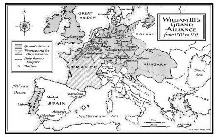
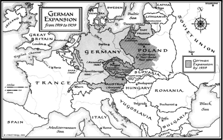

Birleşmiş bir Almanya’nın doğuşu da bu korkuları artırmaktadır, iki kıta devinin, tarihi olarak komşularını parçaladıkları veya onların topraklarında savaştıklarını hatırlayan ve ikisi arasında bulunan devletler, doğan güvenlik boşluğundan çok korkmaktadırlar; bu nedenle NATO
üyeliğinde
ifadesini
bulan
Amerikan
korumasını
istemektedirler.
NATO Sovyet gücünün çöküşüne adapte olmak
gereksinimi içindeyse, Avrupa Birliği de, Avrupa bütünleşmesinin kalbindeki sözsüz uzlaşmayı tehdit eden birleşmiş bir Almanya gerçeği ile yüz yüze gelmektedir: Federal Almanya, Avrupa Topluluğu’nda, Fransızların politik liderliğini kabul etmesi karşılığında ekonomik işlerde tam bir söz hakkına sahipti. Böylece, Federal Cumhuriyet, NATO
içindeki stratejik işlerde Amerikan liderliği kanalıyla ve Avrupa Birliği’ndeki politik sorunlarda Fransız liderliğini kabul ederek Batı’ya bağlanmıştır.
İlerideki yıllarda bütün geleneksel Atlantik ilişkileri değişecektir. Avrupa’nın eskisi gibi Amerika korumasına gereksinimi olmayacak ve ekonomik çıkarının daha saldırgan bir şekilde izleyicisi olacaktır; Amerika, Avrupa güvenliği
için fedakârlık yapmaya istekli olmayacak ve çeşitli görünüşler içinde yalnızlığa eğilim gösterecektir; zamanı gelince, Almanya askeri ve ekonomik gücünün kendisine sağlaması gereken politik nüfuza sahip olmak isteyecektir ve duygusal olarak artık Amerikan askeri ve Fransız politik desteğine bağlı olmayacaktır.
Bu eğilimler, Adenauer geleneğinin mirasçısı olan (Bkz.
Bölüm 20) Helmut Kohl iktidarda olduğu sürece tamamen belirgin olmayacaktır. Ancak o da bu tip liderlerin sonuncusunu temsil etmektedir. Yeni yetişen kuşak, savaşı ve yerle bir edilmiş durumdaki savaş sonrası Almanya’sının kalkındırılmasındaki Amerikan rolünü kişisel olarak bilmez.
Uluslar üstü kurumlara kendisini bağlamak ve görüşlerini, Amerika veya Fransa’nın görüşlerinden sonra ikinci sıraya koymak için duygusal bir nedenleri yoktur.
Amerikalı ve Avrupalı liderlerin savaş sonrası kuşaklarının en büyük başarısı, Amerika’nın organik olarak Avrupa’ya bağlanmaması durumunda, sonradan Atlantik’in her iki yakası için daha kötü şartlar altında müdahale etmek zorunda kaldığını anlamaları olmuştur. Bugün bu görüş daha da çok doğrudur. Almanya o kadar çok güçlenmiştir ki, bugünkü mevcut Avrupa kurumlan, Almanya ile Avrupalı ortakları arasındaki bir denge kuramaz. Aynı zamanda, Almanya’yla birlikte bir Avrupa bile, Sovyet dağılması sonrasının en tehdit
edici iki sonucunu, yani Rusya’nın yeniden dirilişini veya dağılışını kendi başına yönlendiremez.
Almanya ile Rusya’nın birbirlerini, kendilerinin başlıca ortağı veya başlıca düşmanı olarak tanımlamaları başka hiçbir ülkenin çıkarına değildir. Birbirlerine çok yakın olursa, ortak hâkimiyet korkusu yaratırlar; kavga ederlerse, krizi tırmandırmak için Avrupa’yı da işin içine sokarlar. Amerika ve Avrupa’nın, Almanya ve Rusya’nın gem vurulmamış
ulusal politikalarının kıtanın merkezinde çekişmelerim engellemekte ortak çıkarı vardır. Amerika olmadan, Büyük Britanya ve Fransa Batı Avrupa’da politik dengeyi savunamaz; Almanya milliyetçiliğe kayabilir ve Rusya’nın küresel rakibi olamaz. Avrupa olmadan da Amerika psikolojik, coğrafi ve jeopolitik olarak Avrasya kıyılarından uzak bir adaya dönüşebilir.
Soğuk Savaş sonrası düzeni, NATO nedeniyle üç tür problemle karşı karşıyadır: Geleneksel ittifak yapısı içindeki iç ilişkiler; Atlantik devletlerinin, Doğu Avrupa’daki eski Sovyetler Birliği uydu devletleri ile ilişkileri ve son olarak, Sovyetler Birliği’nin yerine geçen devletlerin, özellikle Rus Federasyonu’nun, Kuzey Atlantik ve Doğu Avrupa ülkeleri ile ilişkileri.
Kuzey Atlantik ittifakı içindeki iç ilişkilerin ayarlanması, Amerika ve Fransa’nın Atlantik ilişkileriyle ilgili görüşleri
arasındaki bitmez tükenmez çekişmenin etkisi altındadır.
Amerika, NATO’ya entegrasyon bayrağı altında egemen olmuştur. Avrupa’nın bağımsızlığını savunan Fransa, Avrupa Birliği’ne şekil veren ülkedir. Anlaşmazlıklarının sonucu, askeri alanda Amerika’nın rolünün Avrupa’ya politik bir kimlik kazandırmayacak kadar çok egemen olması, Fransa’nın rolünün NATO’da birlik sağlamayacak kadar Avrupa politik otonomisinde ısrarlı olması olmuştur.
Entelektüel olarak, tartışma Richelieu kavramları ile Wilson fikirleri arasındaki çatışmayı tekrarlamaktadır. Yani, çıkarları dengelemek şeklinde dış politika ile temel bir uyum olduğunu varsayan diplomasi arasında çatışmadır. Amerika için, entegre NATO kumandanlığı, müttefikler arasındaki birliğin ifadesi olmuştur; Fransa için bu durum, bir savaş
flamasıdır. Amerikan liderleri, bir ülkenin en zor zamanda müttefikini terk etmek seçeneğini elinde tutmak istemiyorsa, neden bağımsız hareket konusunda bu kadar çok ısrarlı olduğunu anlamakta zorluk çekiyorlar. Fransa ise Amerika’nın, Avrupa’nın bağımsız askeri rolü konusunda bu derece huzursuz olmasını, Amerika’nın gizlice egemen olma duygusuna yoruyordu.
Aslında her iki ortak da kendi tarihinden kaynaklanan uluslararası ilişkiler kavramına göre hareket ediyordu. Fransa, 300 yıl önce başlatmış olduğu Avrupa tarzı diplomasinin
varisidir. Büyük Britanya güç dengesinin koruyucusu rolünü terk etmek zorunda kalırken, Fransa raison d’état politikalarını ve soyut uyumluluğun izleyicisi olmak yerine kesin çıkar hesapçısı olmayı desteklemeye devam ediyor.
Amerika, kısa bir dönem için de olsa, ısrarla Wilsonculuğu uyguladı. Temel bir uyumun var olduğuna inanmış olan Amerika, Avrupa ve Amerikan hedeflerinin aynı olması dolayısıyla Avrupa’nın özerkliğinin gereksiz veya tehlikeli olduğunda ısrar etti.
Çağdaş dönemin iki büyük Avrupa sorunu, –birleşmiş bir Almanya’nın Batı ile bütünleşmesi ve Atlantik İttifakı’nın yeni Rusya ile ilişkileri– Richelieu veya Wilson devlet adamlığından birisinin uygulanması ile çözülemez. Richelieu yaklaşımı, Avrupa ülkelerinde milliyetçiliği teşvik ediyor ve parçalanmış bir Avrupa’ya doğru gidişe neden oluyor. Su katılmamış Wilsonculuk ise, Avrupa kimlik duygusunu zayıflatır. ABD’ye muhalefet etmeye dayanan Avrupa kurumları oluşturma girişimi, sonunda hem Avrupa birliğini, hem de Atlantik tutumunu yıkacaktır. Diğer taraftan, Birleşik Devletler’in NATO içinde daha güçlü bir Avrupa kimliğinden korkmasına gerek yoktu; çünkü Amerika’nın politik ve lojistik desteği olmadan herhangi çapta ve herhangi bir yerde bir bağımsız Avrupa askeri hareketini hayal etmek zordur.
Sonuçta, birliği sağlayan entegre kumandanlık değil, paylaşılan politik ve güvenlik çıkarlarıdır.
Birleşik Devletler ile Fransa, Wilson idealleri ile Richelieu idealleri arasındaki uzlaşmazlık, gelişen olaylarla ortadan kaldırılmış oldu. Hem Atlantik ittifakı hem de Avrupa Birliği, yeni ve istikrarlı dünya düzeninin birbirinden ayrılmaz yapı bloktandır. NATO, nereden gelirse gelsin askeri şantaja karşı en iyi korunma organizasyonudur; Avrupa Birliği ise Orta ve Doğu Avrupa’nın istikrarı için önemli bir mekanizmadır. Her iki kurum da Sovyetler Birliği’nin eski uyduları ve yeni devletleri ile barışçı bir uluslararası düzen arasında bağlantı kurmak için gereklidir.
Doğu Avrupa’nın geleceği ile Sovyetler Birliği’nin yerine geçen devletlerin geleceği aynı sorun değildir. Doğu Avrupa, Kızıl Ordu’nun işgaline uğramıştır. Doğu Avrupa kendisini, kültür ve politika bakımından Batı Avrupa gelenekleriyle birlikte tanımlıyordu. Bu, Polonya, Çek Cumhuriyeti, Macaristan ve Slovakya’dan oluşan Visegrad devletleri için özellikle doğrudur. Batı Avrupa ve Atlantik kurumlarıyla bağları olmazsa, bu ülkeler Almanya ile Rusya arasında hiçbir kimseye ait olmayan bölge konumuna geleceklerdir. Bu bağların anlam ifade etmesi için, bu ülkelerin hem Avrupa Birliği’ne, hem de Atlantik İttifakı’na üye olmaları gerekir.
Ekonomik ve politik bakımdan yaşayabilmesi için, Avrupa
Birliği’ne gereksinmeleri vardır; ve güvenlik bakımından Atlantik
Antlaşması’na
dönmüşlerdir.
Gerçekte,
bu
kurumlardan birinde üye olmak, öbür kurumda da üyelik anlamına geliyor. Avrupa Birliği’nin üyelerinin çoğu NATO’nun da üyesi olduğundan ve Avrupa bütünleşmesi belli bir noktaya geldikten sonra, üyelerinden birine karşı yapılan bir saldırıya diğer üyelerin kayıtsız kalması olası olmadığından, Avrupa Birliği’nde üyeliğin, şöyle veya böyle, sonunda NATO güvencesinin en azından de facto olarak genişlemesine yol açması doğaldır.
Şimdiye kadar, her iki kurum için de Doğu Avrupa ülkelerinin üyeliği bloke edilmiş olduğundan bu problemden kaçınılmıştır. Ancak bu kararın arkasındaki gerekçe, Avrupa ve Amerikan politik gelenekleri arasındaki kadar farklıdır.
Avrupa, Avrupa Birliği’ni doğuya doğru genişletme kararını Realpolitik’e dayandırdı. Avrupa onları da içine almayı kabul etmiş ve Doğu Avrupa ülkelerine, ekonomilerinde reform yapmaları için ortak üyelik önermişti (Bu süreç içinde, Batı Avrupa ekonomilerini bir müddet daha rekabetten korumak amacındaydı.)
Bu
durum,
nihai
üyeliği,
zamanla
çözümlenecek şekilde teknik bir sorun haline getirirdi.
Bu ülkelere NATO üyeliğinin verilmesine Amerika’nın karşı koyması, bir ilke sorunudur. Çatışma beklentisine dayandıkları gerekçesiyle ittifaklara karşı olan Wilsoncu
görüşe dönülerek, Başkan Clinton Ocak 1994’teki NATO
zirvesinde alternatif bir görüş ileri sürdü. Birleşik Devletler’in, Polonya, Macaristan, Çek Cumhuriyeti ve Slovakya’nın NATO üyeliğine neden karşı olduğunu açıklarken, Atlantik İttifakı’nı, “gelecek bir çatışmanın kehanetini yaratarak Doğu-Batı arasında yeni bir hat çizemeyeceğini” söyledi. “...Avrupa’da daha doğuya doğru bir çizgi çizmemizi isteyen Avrupa’daki ve Birleşik Devletler’deki herkese şunu söylüyorum: Avrupa için en güzel gelecek olasılığını şimdiden kapatmamalıyız. Öyle bir gelecek ki, her yerde demokrasi, pazar ekonomisi ve ortak güvenlik için insanların işbirliği olacak.” {1059}
Bu ruh hali içinde, Başkan Clinton, Barış için Ortaklık denen bir plan ortaya koydu. Bu plan, Sovyetler Birliği’nin yerine geçen bütün devletleri ve Moskova’nın eski Doğu Avrupa uydularının hepsini, belirsiz bir ortak güvenlik sistemine katılmaya davet ediyordu. Wilsonculuk ile Wallace’in Bölüm 16’da anlatılmış olan sınırlandırma politikası eleştirisinin bir karışımı olan bu sistem, ortak güvenlik prensiplerini uygulamaktadır; Sovyet ve Rus emperyalizminin kurbanları ile suçlularını aynı kefeye koymakla Afganistan sınırındaki Orta Asya Devletleri ile Polonya’yı aynı statüye tâbi tutmaktadır ki, Polonya Rusya’nın katıldığı dört bölünmenin kurbanı olmuştur. Barış
için Ortaklık genellikle yanlış değerlendirildi. Bu NATO’ya giden yolda bir istasyon değildir; nasıl Locamo Antlaşması (Bkz. Bölüm 11) 1920’li yıllarda Fransa’nın istediği İngiliz-Fransız ittifakına bir alternatif olmuşsa, Barış için Ortaklık da NATO üyeliğinin alternatifidir.
Ancak Locarno, ortak bir maksada dayanan bir ittifak ile ortak bir tehdit kavramına değil de, iç yönetimin belirlenen şartlarının yerine getirilmesine dayanan çok taraflı bir kurum arasında orta bir yol olmadığını göstermiştir. Barış için Ortaklık, Avrupa’da iki çeşit sınır yaratma tehlikesi taşıyor: Güvenlik garantileri ile korunmuş olanlar ve bu garantilerin verilmesi reddedilenler. Bu durumun potansiyel saldırganlar için cesaret verici ve potansiyel kurbanlar için moral bozucu bir durum olması kaçınılmazdır. Çatışmadan kaçınmak için, Doğu ve Orta Avrupa’da stratejik ve kavramsal olarak çok tehlikeli olan hiç bir kimseye ait olmayan bölge oluşturulmamalıdır. Bu, birçok Avrupa çatışmasının nedeni olmuştur.
Doğu Avrupa’nın güvenliği ve Rusya’yı uluslararası topluma entegre etme şeklindeki ikili güvenlik problemini aynı programın bir parçası olarak çözmek imkânsızdır. Barış
için Ortaklık NATO’nun bir başka yüzü olarak kurulmuşsa, NATO’yu realist güvenlik misyonu ile ilgisiz bazı faaliyetlere sokmak, Doğu Avrupa’da güvensizlik duygusunu daha da
büyütmek ve yine yeterli derecede belirgin olmadığından Rusya’yı yatıştıramamak sonucunda Atlantik İttifakı’nı ortadan kaldırabilir. Gerçekten de Barış için Ortaklık, potansiyel saldırı kurbanları tarafından tehlikeli değilse bile, faydasız olarak değerlendirilme tehlikesi içermektedir.
Asya’da ise, öncelikle Çin’e ve Japonya’ya karşı bir etnik kulüp gibi algılanabilir.
Aynı zamanda, Rusya’nın Atlantik ittifakı devletleri ile bağlantı kurması da önemlidir. Barış için Ortaklık denen bir kuruma, bütün üyelerinin aynı şekilde yorumlayacağı işlerle uğraşmak koşuluyla yer olabilir. Böyle ortak işler, ekonomik kalkınma, eğitim ve kültür işlerinde mevcuttur. Avrupa Güvenlik ve işbirliği Konferansı’na bu amaçla genişletilmiş
fonksiyonlar verilebilir ve adı Barış için Ortaklık olarak değiştirilebilir.
Bu amaçla, Atlantik ittifakı ortak bir politik çerçeve oluşturabilir ve toptan güvenliği sağlayabilir; Avrupa Birliği eski Doğu Avrupa uydu devletlerinin üyeliğini hızlandırabilir ve Kuzey Atlantik işbirliği Konseyi (NACC) ve Avrupa Güvenlik ve İşbirliği Konferansı, belki Barış için Ortaklık şeklinde yeni bir isim altında eski Sovyetler Birliği cumhuriyetleri ile –özellikle Rusya Federasyonu– Atlantik İttifakı yapısı arasında bağlantı kurabilir. Güvenlik şemsiyesi, Doğu Avrupa’daki yeni demokrasilere de uzatılabilir. Rusya
sınırları içinde uslu durursa, güvenlik üzerinde odaklanan dikkatler zamanla ortaklığa çevrilebilir. Ortak politik ve ekonomik projeler, Doğu-Batı ilişkilerini gittikçe artan bir şekilde meşgul edebilir.
Atlantik ilişkilerinin geleceği Doğu-Batı ilişkilerinde değil, XXI. yüzyılın öngörülebilir gelişmeleriyle Amerika’nın nasıl baş edeceğinde yatmaktadır. Bu yazı yazıldığı sırada, hangi yükselen kuvvetlerin, en hakim veya en tehdit edici olacağını söylemek olanaksızdır: Rusya mı, Çin mi yoksa köktenci İslam mı? Fakat Amerika’nın bu gelişmelerden herhangi birisiyle başa çıkma yeteneği, Kuzey Atlantik devletlerinin işbirliğiyle artacaktır. Bu şekilde, “bölge dışı” denilen sorunlar, Kuzey Atlantik ilişkilerinin özünü oluşturacaktır ki, örgütün bu amaca göre tekrar organize olması gerekmektedir.
Amerika’nın Asya’ya olan ilgisi, 1993’te Asya hükümet başkanlarının katılımı ile yapılan bir toplantıda, Clinton tarafından yapılan Pasifik Topluluğu önerisi ile sembolize edilen büyük bir atılıma sahne oldu. Fakat “topluluk” terimi Asya’ya yalnız çok dar anlamda uygulanabilmektedir; çünkü Pasifik’teki ilişkiler Atlantik bölgesindekinden temelde çok farklıdır. Avrupa ulusları ortak kurumlarda gruplaşırken, Asya ulusları kendilerini uzak ve rakip durumda tutarlar. Asya’nın başlıca ulusları arasındaki ilişkiler, XIX. yüzyıl Avrupa güç dengesi sisteminin birçok özelliğini taşır. Birisinin gücünün
artışı, diğerleri tarafından hemen manevralarla dengelenmeye çalışılır.
Buradaki joker, tıpkı Büyük Britanya’nın XX. yüzyılın iki dünya savaşına kadar Avrupa güç dengesini koruması gibi hareket edebilecek kapasiteye (felsefeye değil) sahip olan Amerika’dır. Asya-Pasifik bölgesinin övünülen refahının dayanağı olan istikrarı, bir doğa kanunu olmayıp, Soğuk Savaş sonrasında artan bir şekilde dikkat ve özen isteyen bir dengenin sonucudur.
Wilsonizmin Asya’da çok az taraftarı vardır. Ortak savunma veya işbirliğinin paylaşılan iç değerler üzerine dayandırılması gibi sözler yoktur. Hatta çok az olan demokrasilerde de böyle bir şey yoktur. Vurgu, denge ve ulusal çıkar üzerindedir. Askeri harcamalar başlıca Asya ülkelerinde artmaya başlamıştır. Çin süper devlet statüsü yolundadır. Yüzde 8’lik kalkınma hızı ile (1980’li yıllardakinden daha az) Çin’in Gayri Safi Milli Hasılası XXI.
yüzyılın ilk yirmi yılının sonunda Amerika’nınkine yaklaşacaktır. Bu tarihten çok önce Çin’in politik ve askeri gölgesi, Asya üzerine düşecek ve Çin’in politikası ne kadar kontrollü olursa olsun, bu durum diğer güçlerin hesaplarını etkileyecektir. Diğer Asya ülkeleri, tıpkı şimdi Japonya’ya yaptıkları gibi, gittikçe güçlenen Çin’e karşı denge ağırlığı oluşturma çabası içinde olacaklardır. Her ne kadar bunu inkâr
ederlerse de, Güneydoğu Asya ülkeleri, şimdiye kadar korkulan Vietnam’ı bile Çin ve Japonya’yı dengelemek için kendi gruplarında hesaba (ASEAN) katmaktadırlar. Yine bu yüzden ASEAN, Birleşik Devletler’in bölgeyle ilgisini devam ettirmesini istemektedir.
Japonya’nın rolü, kaçınılmaz bir şekilde değişen şartlara adapte olacaktır. Ulusal stillerine uygun olarak davranan Japon liderleri, görünüşe göre kendiliğinden oluşacak nüanslara göre ayarlamalar yapacaklardır. Soğuk Savaş
sırasında tarihi kendi kendiyle yetinme tutumlarını terk eden Japonya, Birleşik Devletler’in korumasını kabul etmiştir.
Kararlı bir ekonomik rakip olan Japonya, dış ve güvenlik politikalarını Washington’a havale ederek ekonomik alanda manevra serbestliğinin bedelini ödemiştir, iki ülke de Sovyetler Birliği’ni, güvenliklerine karşı en önemli tehdit olarak kabul ettiği sürece Amerika ve Japonya’nın ulusal çıkarlarının aynı olduğunu kabul etmek doğaldı.
Bu örnek, büyük bir olasılıkla devam etmeyecektir. Askeri gücü artan Kore ve Çin ile Sibirya’ya yerleşmiş ve kuvvetinden bir şey kaybetmemiş Sovyet askeri gücü karşısında, Japonların uzun vadeli planlamacıları, Amerikan ve Japon çıkarlarının aynı olduğunu sonsuza kadar verilmiş
bir hak olarak kabul edemezler. Her yeni gelen Amerikan yönetimi mevcut politikaların yeniden gözden geçirileceğini
(veya en azından onların değişikliğe açık olduğunu) söyleyerek işe başlarken ve ekonomik sorunlarda çatışma, istisna olmaktan çok, kural olduğuna göre, Amerikan ve Japon dış politika çıkarlarının hiçbir zaman birbirinden ayrılmayacağını ileri sürmek zordur. Her durumda, Asya kıtası ile ilgili olarak Japonya’nın perspektifi, coğrafi yakınlık ve tarih deneyimi dolayısıyla Amerika’nınkinden farklıdır. Bu nedenle, Japon savunma bütçesi yavaş yavaş dünyanın en büyük üçüncü bütçesi olana kadar büyümüştür ve Rusya’nın iç problemleri göz önüne alındığında, belki de dünyanın en etkin ikinci savunma bütçesidir.
1992’de
Japon
Başbakanı
Kiichi
Miyazawa’ya,
Japonya’nın bir Kuzey Kore nükleer kapasitesini kabul edip etmeyeceği sorulduğu zaman, cevabı Japonlara hiç uygun olmayan bir şekilde direkt ve kısa idi: “Hayır.” Bu, Japonya’nın kendi nükleer kapasitesini geliştireceği anlamına mı geliyor? Yoksa Kuzey Kore’nin kapasitesini engellemeye çalışacağını mı söylemek istiyor? Bu soruların sorulabilmesi bile,
Japonya’nın,
bir
dereceye
kadar
Amerikan
güvenliğinden ve dış politika bağlarından kopma olasılığının var olduğunu gösteriyor.
Diğer büyük devletlerle ilgili daha da sivri analizlerin yapılabilmesi, Asya dengesinin çok oynak ve hatta tehlikeli olabileceğini gösteriyor. Bu durumda Birleşik Devletler, Asya
dengesini korumak için bu denge tehlikeye girinceye kadar beklemeyecektir. Politikası, bütün mevcut Asya forumlarını etkileyebilecek kadar esnek olmalıdır. Bir dereceye kadar, bu halen olmaktadır. ASEAN’da (Güneydoğu Asya için) yardımcı bir rol ve Asya-Pasifik Ekonomik işbirliğinde (APEC) önemli bir katılım sağlamıştır.
Fakat bu tür çok taraflı kurumlarda Amerika’nın etkisinin sınırları belli olmuştur. Daha kurumsal ve Avrupa modeline uygun bir Pasifik Topluluğu şeklindeki Clinton’un önerisi, nazik bir ilgisizlikle karşılanmıştır; çünkü Asya ulusları kendilerini topluluk olarak görmemektedirler. Potansiyel Asya süper devletlerine, hatta ABD’ye, kendi işlerinde önemli bir söz hakkı sağlayacak kurumsal bir çerçeve istememektedirler. Asya ulusları, Amerikan fikir alışverişine açıktırlar; aynı zamanda Amerika’nın yeter derecede işlerine karışmasını da isterler; çünkü tehlikeli bir durumda, bağımsızlıklarına karşı olan tehditleri onun vasıtasıyla savuşturabilirler. Fakat güçlü komşularından da çok kuşkuludurlar ve tüm Pasifik’i içine alan resmi kurumlara olumlu yaklaşmayacak kadar Birleşik Devletler’den de kuşkuludurlar.
Bu nedenle, Amerika’nın olaylara yön verme yeteneği, öncelikle Asya’nın başlıca ülkeleri ile olan ikili ilişkilerine bağlıdır. Bu yazı yazıldığı sırada üzerinde çok kavga
edilmekte olan Amerika’nın Japonya ve Çin’e karşı politikası da bu yüzden çok büyük önem arz etmektedir. Öncelikle Amerika’nın rolü, birbirinden kuşku duyan Japonya ve Çin’in bir arada yaşamalarına yardımcı olmuştur. Yakın bir gelecekte yaşlanan nüfusu ve durağanlaşan ekonomisi ile karşı karşıya kalacak olan Japonya, Çin bir süper güç olarak ortaya çıkmadan ve Rusya kuvvetini toplamadan önce teknolojik ve stratejik üstünlüğünü kullanmaya karar verebilir. Sonra da büyük dengeleyiciye, yani nükleer teknolojiye yönelebilir.
Her iki olasılıkla ilgili olarak, yakın Japon-Amerikan ilişkileri, Japon ılımlılığı ve Asya’nın diğer devletlerine güvence vermek bakımından çok önemli bir katkıda bulunacaktır. Amerika ile ilişkili Japon askeri gücü, Çin’i ve diğer Asya devletlerini, tamamen Japon nitelikli ulusal askeri olanaklardan daha az endişelendirmektedir. Ayrıca Japonya, öncekinden daha az olsa da Amerikan güvenlik ağı olduğu müddetçe, daha az askeri güce gereksinimi olduğuna karar verecektir. Kuzeydoğu Asya’da (Japonya ve Kore) önemli bir Amerikan askeri mevcudiyetine gerek olacaktır. Böyle bir kuvvetin yokluğunda, Amerika’nın Asya’daki devamlı rolüne bağlılığı inanılırlıktan yoksun kalacak ve Japonya ile Çin milliyetçi bir hareket tarzı izlemeye devamlı bir şekilde heveslendirilerek, sonuçta birbirlerine ve aradaki tampon ülkelere yöneleceklerdir.
Paralel jeopolitik çıkarlar bazında Japon-Amerikan ilişkilerine tekrar canlılık ve açıklık kazandırmak önemli engellerle karşılaşacaktır. Ekonomik anlaşmazlıklar zaten bildiğimiz şeydir; kültürel engeller daha da sinsi olabilir.
Bunlar, karar vermekle ilgili değişik ulusal yaklaşımlarda acı veren ve zaman zaman insanı deli eden şeylerdir. Amerika, statü bazında karar veren bir ülkedir; yetkili birisi, genellikle başkan, ara sıra dışişleri bakanı, konumunun gücüne göre mevcut seçeneklerden birisini seçer. Japonya ise, konsensüse göre hareket eder. Başbakan dâhil hiç kimse tek başına karar verme yetkisine sahip değildir. Kararı uygulaması gereken herkes konsensüsün oluşumuna katılır ve herkes mutabık olmadan karar alınmış sayılmaz.
Bütün bunlar, bir Amerikan başkanı ile bir Japon başbakanı arasındaki toplantılarda yanlış anlama yüzünden daha da büyüyen temel farklılıkları ortaya çıkarır. Amerikan başkanı mutabakatın bildirince, işin böyle yapılacağını ima etmiş olur; Japon başbakanı mutabakatını bildirirse, bu Amerika’nın konumunu kabul ettiğini değil, bunu anladığını ve konsensüs grubuna götüreceğini gösterir. Otoritesinin bundan öteye geçmediğinin açık olduğunu varsayar. Asya’nın geleceği hakkındaki görüşmelerde, Amerika’nın çok sabırlı olması ve Japonya’nın da gelecek işbirliğinin dayanacağı uzun vadeli politikaları görüşmek için hazır olması gerekmektedir.
Gariptir ki, Japon-Amerikan ilişkilerinin sağlamlığı, Çin-Amerikan ilişkisinin ters yüzüdür. Çin kültürüne karşı akılcı yakınlığına rağmen, Japonya, hayranlık ve korku, dostluk arzusu ve egemen olmak hevesi arasında kararsızlık içinde kıvranmıştır. Çin-Amerikan gerginliği, Japonya’yı Birleşik Devletler ile bağlarını koparmaya heveslendiriyor. Bunun amacı, Çin’deki etkisini artırmak değilse bile, en azından Amerika’nın liderliğini çok yakından takip ederek bunu azaltmamaktır. Aynı zamanda, tam bir Japon ulusal yaklaşımı, Pekin
tarafından,
Japonya’nın
hegemonya
kurmak
konusundaki iştahının bir belirtisi olarak yorumlanması riski taşımaktadır. Bu nedenle, Çin’le Amerika’nın iyi ilişkiler içinde olması, hem Japonya ile Amerika’nın, hem de Çin’le Japonya’nın iyi ilişkiler içinde olmasının ön şartıdır. Bu öyle bir üçgen ki, taraflardan herhangi birisi ancak büyük bir tehlikeyi göze almak şartıyla ayrılabilir. Ayrıca, ulusları kesin bir şekilde dost veya düşman olarak ayırmak eğiliminde olan Amerika’yı çok rahatsız eden bir belirsizlik de yaratacaktır.
Bütün büyük ve potansiyel olarak büyük devletler içinde en fazla yükseleni Çin’dir. Birleşik Devletler zaten en güçlüsüdür. Avrupa daha büyük bir birliği bir araya getirmek zorundadır. Rusya sendeleyen bir devdir ve Japonya, zengin, fakat çekingen bir ülkedir. Çin’e gelince, ekonomik büyümesi yıllık yüzde 10 olan, kuvvetli bir ulusal birlik duygusuna ve
daimi büyüyen bir askeri güce sahip bulunan bu ülke, büyük devletler arasında en hızlı büyüyeni olacaktır. 1943’te, Roosevelt Çin’i “Dört Polis”den biri olarak öngörmüştü; fakat hemen peşinden Çin bir iç savaşın karışıklığı içine daldı. Bu karışıklıktan ortaya çıkan Maoist Çin, bağımsız bir büyük devlet olmak niyetindeydi; fakat ideolojik engelleri dolayısıyla düş kırıklığına uğradı, ideolojik çırpınmalarını geride bırakan Çin’in reformcu liderleri, Çin’in ulusal çıkarlarını hünerli bir inatçılıkla korudular. Çin’le çatışma politikası, Amerika’nın Asya’da izole olması tehlikesini içerir. Hiçbir Asya ülkesi, Çin’le yanlış yönlendirilen Amerikan politikasının bir sonucu olarak gördüğü bir anlaşmazlık olduğunda Amerika’yı desteklemez veya destekleyemez. Böyle bir durumda, Asya devletlerinin büyük bir çoğunluğu, istemeseler bile Amerika ile ortaklığı az veya çok kesmeyi yeğlerler. Çünkü hemen hemen her ülke, Çin ve Japonya’yı içerecek istikrarlı bir uzun vadeli çerçeve yaratılması için yüzünü Amerika’ya çevirmiştir ve bir Çin-Amerikan çatışması her iki ülke için de bu olasılığı ortadan kaldırır.
En uzun bağımsız dış politika tarihine sahip ülke olan ve dış politikasını geleneksel olarak ulusal çıkar üzerine oturtan Çin, korkulan komşuları Rusya ve Japonya’ya ve daha az da olsa Hindistan’a karşı bir denge oluşturduğu için,
Amerika’nın Asya işlerine karışmasını memnunlukla karşılamaktadır. Ancak hem Pekin’le, hem de Pekin’de Çin güvenliğine potansiyel tehdit olarak algılanan diğer ülkelerle aynı zamanda dostluk oluşturma peşinde olan Amerikan politikası –Birleşik Devletler bakımından doğru bir politikadır– Washington ile Pekin arasında dikkatli ve düzenli bir diyalog gerektirir.
1989’da Tiananmen Meydanı olaylarından sonra dört yıl boyunca, bu diyalog Amerikalıların yüksek düzeyde temasları reddeden tutumu dolayısıyla durdu. Böyle bir tutum, Soğuk Savaş’ın en şiddetli zamanlarında bile Sovyetler Birliği’ne uygulanmamıştı. Böylece, insan hakları sorunu Çin-Amerikan ilişkilerinin merkezine kaydı.
Clinton Yönetimi akıllıca bir şekilde yüksek seviyede temasları tekrar başlattı; Çin-Amerikan ilişkilerinin geleceği bu nedenle bu temasların sonucuna bağlıdır. Açıktır ki Birleşik Devletler insan haklarına ve demokratik haklara olan geleneksel
ilgisini
bırakamaz.
Sorun
Amerika’nın
değerlerinin savunulması meselesi değil, Çin-Amerikan ilişkilerinin ne dereceye kadar bu değerlere bağlanacağı sorunudur. Çin, Amerikan-Çin ilişkilerinin karşılıklı çıkar dengesi üzerine değil, Washington’un takdirine göre açılan veya kapatılan tercihlere dayandırılmasından hoşnut değildir.
Böyle bir tavır, Amerika’yı hem güvenilmez, hem de
içişlerine karışan durumuna sokuyor ki, güvenilmezlik Çinlilerin gözünde en büyük kusurdur.
Bölgesinde (ve dünyada) tarihi olarak üstün bir konumda olduğu bilinen Çin’de, başkalarının kendi kurumları ve iç uygulamaları ile ilgili önerileri büyük tepki ile karşılanır. Bu genel duyarlılık, tarihinde Batı’nın Çin işlerine karışmasıyla daha da büyüdü. XIX. yüzyılın başlarında Çin’in kuvvet kullanılarak dünyaya açıldığı Afyon Savaşı’ndan beri, Batı, Çinlilerin gözünde sonu gelmeyen aşağılamaları yapanlar olarak görülmüştür. Statüde eşitlik ve yabancı önerilerine boyun eğmemekte gösterilen hırçınlık, Çin liderleri için bir taktik değil, moral bir zorunluluktur.
Çin’in Birleşik Devletler’den istediği şey, güçlü ve açgözlü bulduğu komşularına karşı denge sağlayacak stratejik bir ilişkidir. Bu düzeyde dış politika koordinasyonunu sağlamak için, Çin insan hakları konusunda bazı ödünler vermeye razı edilebilir; ancak bunları kendi hür iradesi ile yapıyormuş gibi bir hava içinde hareket edilmelidir. Fakat Amerika’nın kamuya açıklanan şartların oluşmasındaki ısrarı, Çin’de hem Çin toplumuna Amerikan değerlerinin empoze edilmesi ve böylece aşağılanması, hem de Amerika’nın ciddiyetten uzak bir tutumu olarak değerlendirilmektedir. Çünkü bu tavır, Amerika’nın Asya dengesinde ulusal çıkarı bulunmadığı izlenimi vermektedir. Eğer Amerika’ya böyle bir ulusal amaç
için güvenilemezse, Çin’in ödün vermekte hiçbir çıkarı yoktur. Çin-Amerikan ilişkisinin kilit noktası, –insan haklarında bile– küresel ve özellikle Asya stratejisinde sözsüz bir işbirliğidir.
Avrupa’yla ilgili olarak, Amerika her ne kadar bir değerler birliğini Avrupa ile paylaşıyorsa da, henüz ortak bir politika veya Soğuk Savaş sonrası dönem için uygun kurumlar oluşturamamıştır; Asya’yla ilgili olarak, Amerika için arzu edilen genel bir stratejiyi tanımlamak olasıdır, fakat bir değerler birliği oluşturmak mümkün değildir. Ancak beklenmeyen bir şekilde Batı Yarımküresi’nde, moral ve jeopolitik amaçların Wilsonizm ve Realpolitik’in birbirine karıştığı bir ortam doğmaktadır.
Batı Yarımküresi’nde Birleşik Devletler’in ilk dış
politikası, özünde bir Büyük Devlet müdahaleciliğiydi.
Franklin Roosevelt’in 1933’te açıklanan iyi Komşuluk politikası işbirliğine dönüşüm işaretini vermiştir. 1947 Rio Antlaşması ve 1948 Bogota Paktı, Amerikan Devletleri Örgütü’nde kurumlaştırılan güvenlik unsurunu sağlamıştır.
Başkan Kennedy’nin 1961 ilerleme için İttifak’ı dış yardım ve ekonomik işbirliği unsurlarını getirmiştir. Fakat bu uzak görüşlü politika, yardım alanların devletçi tutumları yüzünden başarısızlığa mahkûm olmuştur.
Soğuk Savaş sırasında, Latin Amerika devletlerinin birçoğu, otoriter, çoğunlukla askeri hükümetler tarafından yönetiliyordu ve bu hükümetler çoğunlukla ekonomilerinde devlet kontrolünü benimsiyorlardı. 1980’li yılların ortalarında başlamak üzere, Latin Amerika ekonomik durgunluğunu silkinerek üzerinden attı ve şaşılacak bir birlik içinde demokrasiye ve pazar ekonomisine doğru ilerlemeye başladı.
Brezilya, Arjantin ve Şili, demokratik yönetim için askeri hükümetleri bıraktı. Orta Amerika iç savaşlarını sona erdirdi.
Düşüncesiz borçlanmalarla iflasın eşiğine gelen Latin Amerika, kendisini mali disiplin altına aldı. Hemen hemen her yerde, devletin egemen olduğu ekonomiler yavaş yavaş
pazar kuvvetlerine açılmaya başladı.
Amerikalar için Girişim 1990’da Bush tarafından açıklandı; Meksika ve Kanada ile bir Kuzey Amerikan Serbest Ticaret Anlaşması için verilen mücadele Clinton tarafından 1993’te sonuçlandırıldı. Bu iki girişim, tarihte Latin Amerika’ya yönelik en yenilikçi Amerikan politikasını temsil eder. Birçok iniş ve çıkıştan sonra, Batı Yarımküresi, yeni ve insani bir küresel kilit unsurlarından biri haline gelmenin eşiğindedir. Bir grup demokratik ülke, halkın seçtiği hükümetlere, pazar ekonomilerine ve yarımküre çapında serbest ticarete yönelmiştir. Batı Yarımkürede kalan tek Marksist diktatörlük Küba’dır; başka her yerde milliyetçi,
korumacı ekonomik yönetim metotları, yerlerini yabancı sermayeyi iyi karşılayan ve açık uluslararası ticaret sistemlerini destekleyen ekonomilere bırakmışlardır. Nihai ve dramatik amaç, karşılıklı yükümlülükler ve birlikte hareket etme prensibine dayanarak Alaska’dan Ümit Burnu’na kadar bir serbest ticaret bölgesi yaratmaktır ki, böyle bir şey kısa bir zaman önce gerçekleşme ümidi olmayan bir ütopya sayılırdı.
NAFTA ilk adım olarak Batı Yarımküresi çapında bir serbest ticaret sistemi Amerikalara ne olursa olsun egemen bir rol sağlayacaktır. Ticaret ve Tarifeler Genel Anlaşması’nın (GATT) 1993’te yapılan Uruguay Görüşmeleri ilkeleri sonuçta uygulanırsa, Batı Yarımküresi küresel ekonomik büyümede önemli bir katılımcı olacaktır. Eğer ayırımcı bölgesel gruplar üstün gelirse, Batı Yarımküresi geniş pazarı ile diğer bölgesel ticaret blokları ile rekabet edebilecektir; gerçekte, NAFTA böyle bir rekabeti önlemek veya kaçınılmaz olursa kazanmak için en etkili araçtır. Batı Yarımküresi dışında prensiplerine uymayı kabul eden devletlere ortak üyelik verilmek suretiyle genişletilmiş bir NAFTA, serbest ticareti teşvik edebilir ve daha sınırlandırıcı kurallar üstünde ısrar eden devletleri cezalandırabilir. Değerleri ile gereksinimleri arasında bir denge kurmaya zorunlu bir dünyada, Amerika kendi ideallerinin ve jeopolitik hedeflerinin Batı Yarımküresi’nde bir araya gelmiş olduğunu
keşfetmiştir ve Amerika’nın ümitlerinin doğduğu ve ilk önemli dış politika girişimlerini uyguladığı yer burasıdır.
Bu yüzyıl içinde üçüncü kez yeni bir dünya düzeni yaratmak için kendini ileri atan Amerika’nın en önemli görevi, kendisinin dünyanın geri kalanından farklı olduğu inancının içinde doğal olarak var olan iki heves arasında dengeyi yakalamaktır: Amerika’nın her yanlışa bir çare bulması ve her yerinden oynayan taşı yerine oturtması gerektiği nosyonu ve kendi kabuğuna çekilme şeklindeki içgüdüsü. Soğuk Savaş sonrası bütün etnik karışıklıklara ve iç savaşlara herhangi bir fark gözetmeden karışmak Amerika’yı tüketecektir.
Ancak
kendisini
iç
erdemlerinin
saflaştırılmasıyla sınırlayan bir Amerika, sonunda kendi güvenliğini ve refahını, gittikçe artan bir şekilde üzerindeki kontrolünü kaybedeceği uzak diyarlardaki diğer toplumların kararlarına bağlayacaktır.
1821’de, John Quincy Adams Amerikalıları “uzaktaki canavarları” öldürmek eğiliminden dolayı uyarırken, Soğuk Savaş sonrası dünyada, bu kadar çok sayıda ve bu kadar büyüklükte canavar olabileceğini hayal edemezdi. Her kötülükle Amerika mücadele edemez, hele yalnız hiç edemez.
Fakat bazı canavarlara karşı, öldürülmese de en azından direnmek gerekir. En çok gereksinim duyulan şey, bu seçimi yaparken kullanılacak kriterdir.
Amerikan liderleri, genellikle yapı yerine motivasyon üzerinde durmuşlardır. Rakiplerinin yaptıkları hesaplardan çok, onların tutumlarını etkilemeye çalışmışlardır. Sonuç olarak, Amerikan toplumu tarihten alınan ders konusunda özellikle kararsızdır. Amerikan filmleri genellikle bazı dramatik olayların, bir katili nasıl bir erdem örneği haline getirildiği hikâyeleri ile doludur. Bu durum, geçmişin, kaçınılmaz olarak geleceği belirlemediği, her zaman yeni bir başlangıç yapılabileceği şeklindeki yaygın ulusal inanışın bir yansımasıdır. Gerçek dünyada, kişilerde böyle değişimler çok ender görülür, hele birçok seçimin bir araya gelmesinden oluşan uluslar arasında daha da az görülür.
Tarihi reddetme, geçmişe, coğrafyaya veya engellenemez şartlara bakmaksızın evrensel kurallara uygun olarak yaşayan bir evrensel insan imajını över. Amerikan geleneği ulusal özelliklerden çok, evrensel gerçeklere önem verdiğinden, Amerikalı politika üretenler genellikle çok taraflı yaklaşımı, ulusal yaklaşıma tercih ederler: Önemli ulusal jeopolitik veya stratejik sorunlardan çok, silahsızlanma gündemleri, nükleer silahları sınırlandırma ve insan hakları vs.
Amerika’nın tarihle bağlı olmayı reddetmesi ve yenilenme olasılığı üzerinde ısrarı, Amerikan hayat tarzında büyük bir vakar, hatta güzellik yaratıyor. Tarih takıntısı olan kişilerin kendi kendini gerçekleştiren kehanetler ürettiği şeklindeki
ulusal korku, büyük bir haklılık payı içermektedir. Ancak Santayana’nın, tarihi ihmal edenlerin, onun tekerrür etmesine mahkûm olduğu sözü de yeni örneklere gerek olmadan savunulabilecek kadar çok haklılık payına sahip olduğunu göstermiştir.
Amerika’nın idealist geleneğine sahip olan bir ülke, politikasını yeni bir dünya düzeni için tek kriter olarak güç dengesine dayandıramaz. Fakat dengenin, kendi tarihi amaçlarını izleyebilmesi için temel ön şart olduğunu da öğrenmesi gerekir. Bu amaçlar, konuşmayla veya poz atmalarla elde edilemez. Yeni doğmakta olan uluslararası sistem,
Amerikan
diplomasisinin
şimdiye
kadar
karşılaştıklarından daha karmaşık bir sistemdir. Dış politika öyle bir politik sistem tarafından yönetilmelidir ki, bu sistem, yakın olan üzerinde önemle durmalı ve uzun vadeli olanı da teşvik etmelidir. Liderler, bilgiyi görüntülü imajlardan elde etme eğiliminde olan seçmenlerle ilgilenmek zorundadırlar.
Bütün bunlar, önceliklerin tekrar düşünülmesi ve olanakların analiz edilmesi gereken bir zamanda, duygusallığa ve yaşanan anın heyecanına prim vermektedir.
Ancak tarih, görevin büyüklüğü nedeniyle başarısızlığa uğramayı hoş karşılamayacaktır. Amerika’nın başarması gereken şey, bütün seçeneklerin açık olduğu bir dönemden, eğer kendi sınırlarını öğrenebilirse, hâlâ bütün toplumlardan
daha fazla şey başarabileceği bir döneme geçişi sağlamaktır Tarihinin çoğu döneminde Amerika kendi yaşamına yönelik bir dış tehdit görmemiştir. Soğuk Savaş sırasında böyle bir tehdit ortaya çıkmış ve kesin olarak yenilmiştir. Böylece, Amerika, dünyanın diğer ulusları arasında yalnızca Amerika’nın nüfuz edilemez bir özelliği olduğu ve bu ülkenin erdemleri ve iyi işleri dolayısıyla başarılı olacağı inancını teşvik etmiştir.
Soğuk Savaş sonrası dünyada, böyle bir tutum masumiyeti, kendi zevklerine düşkünlüğe çevirebilir. Dünyaya egemen olmak veya ondan çekilmek gücünün olmadığı, kendisini hem çok kuvvetli ve hem de tehlikede hissettiği bir zamanda, Amerika
büyüklüğünü
yaratan
ideallerinden
vazgeçmemelidir. Fakat bu büyüklüğü, etki alanının genişliği hususunda hayaller besleyerek tehlikeye de almamalıdır.
Dünya liderliği, Amerikan gücünün ve değerlerinin doğasında vardır. Fakat bunun doğasında, Amerika’nın diğer uluslarla işbirliği yapmasının onlara bir lütuf olduğu veya iyiliklerini yapmayarak iradesini herkese empoze etmek gibi hudutsuz bir yeteneği olduğu yoktur. Amerika Realpolitik’le herhangi bir ilişki kurarken, tarihte açıkça özgürlük adına yaratılan ilk toplumun temel değerlerini hesaba katmak zorundadır. Ancak Amerika’nın yaşaması ve ilerlemesi, çağdaş gerçekleri yansıtan seçimleri yapmak yeteneğine bağlıdır. Aksi takdirde,
dış politika kendini üstün görerek poz atmaya dönüşür. Bu unsurların her birine verilecek göreceli ağırlık ve her önceliğin getirdiği bedel, politik liderlerin hem başlıca sorunu olacak, hem de onların yerini belirleyecektir. Hiçbir liderin yapmaması gereken şey, herhangi bir seçimin bedeli olmadığını ve herhangi bir dengenin korunmasına gerek bulunmadığını söylemektir.
Modern dönemde dünya düzenine giden yolda üçüncü kez seyahat eden Amerikan idealizmi, her zaman olduğu kadar önemlidir, hatta belki daha da çok önemlidir. Fakat yeni dünya düzeninde bu idealizmin rolü, kusursuz olmayan bu dünyada, bütün seçim yapılması gereken belirsizlikler içinde Amerika’ya destek vermek için gerekli inancı sağlamak olacaktır. Geleneksel Amerikan idealizmi, çağdaş gerçeklerin iyi bir değerlendirmesiyle bir araya gelerek, işe yarar bir Amerikan çıkarları tanımlaması yapmak zorundadır. Geçmişte Amerikan dış politika çabaları, dünyanın temel uyumunun kendisini ortaya koyacağı bir son nokta olduğu gibi, ütopik görüşlerden esin almıştır.
Çok az böyle nihai sonuç beklenebilir; Amerikan ideallerinin gerçekleşmesi, kısmi başarıların sabırla biriktirilmesinde aranmak zorundadır. Soğuk Savaş’ın özelliklerinden olan fiziki tehdit ve düşman ideoloji artık yoktur. Yeni doğmakta olan dünya düzenine egemen
olabilmek için gereksinim duyulan inançlar daha soyuttur: Gelecek hakkındaki görüşler ileri sürülebilir, fakat gelecek gösterilemez; bunun gibi, olanaklarla ümit arasındaki ilişki de özünde tahminidir. Amerika’nın geçmişinin Wilsoncu idealleri –insanlık için barış, istikrar, gelişme ve özgürlük–
sonu olmayan bir yolculukta aranmak zorundadır. Bir İspanyol atasözünde denildiği gibi:
“Hey yolcu! Yollar yoktur. Yollar, yürüyerek oluşturulur.”
Orijinal kopyasını elle yazdığım bu kitabın bütün provalarını tek tek elden geçiren Gina Goldhammer kadar bana kimse yardımcı olmamıştır. Bütün çabalarımızın odak noktası, olağanüstü yeteneği, bitmek tükenmek bilmeyen sabır ve zarafeti ile her şeyi tam zamanında bir araya getiren odur.
Tarihi araştırmaları ve kitap son şeklini alırken birçok faydalı görüşleri ile Jon Vanden Heuvel’in hizmetlerinin unutulması olanaksızdır.
Eski dostum ve yardımcım Peter Rodham, özellikle Amerikan materyalleri üzerinde çok araştırma yaptı ve her bölümü ayrı ayrı okudu. Ona, çok yararlı ve doğru önerilerinden dolayı minnettarım.
Rosemary Neather Niehuss, uzun zamandan beri yorulmak bilmez yardımcım olmuştur. Özellikle Kore ve Vietnam ile ilgili konularda araştırma yapmış, zor ele geçirilebilir gerçekleri bulmuş ve dikkatinden hiçbir şeyin kaçmasına izin vermemiştir. Maureen Minehan ve Stephanie Tone’un da çok değerli yardımları olmuştur.
Jody lobst Williams, hemen hemen okunması olanaksız el yazımı daktilo etmiş ve birçok uzun cümlelerin içinden çıkmayı başarmıştır. Suzanne McFarlane, yorulmak bilmez
dikkat ve anlayışı ile diğer işlerimi yöneterek bütün dikkatimi kitap üzerinde toplamamı sağlamıştır.
William G. Hyland’in, Sovyet materyalleri üzerindeki önerilerinden ve ilk provayı okuyan Norman Podhoretz’den çok yararlandım.
Simon and Schuster Yayınevi’nden Michael Korda, olağanüstü bir editör olduğunu ortaya koydu ve kendisi ile iyi bir dostluk kurdum. Orijinal, basit bir düşüncenin, nasıl karışık ve uzun süreli bir çabaya dönüştüğünü birlikte gördük.
Beni sinirlendiren nazik önerilerinde ne kadar haklı olduğunu, tekrar düşündükten sonra daha iyi anlıyordum.
Lynn Amato, Simon and Schuster’in bütün işlevlerini, tükenmez bir iyi niyet ve güler yüzlülükle, kusursuz bir şekilde koordine etti. Bütün Simon and Schuster personeli –
prova editörleri, desinatörler, üretim ve satış personeli– insanı duygulandıran bir özveri ve çaba ile çalıştılar.
Eşim Nancy, daima güvenilir ve vazgeçilmez bir danışman görevini yaptı. Bütün el yazısı orijinal metni okuyup, olağanüstü akıllı önerilerde bulundu.
Kitaptaki kusurların tümü bana aittir.
Henry A. KISSINGER


Haritalar
POWER VACUUMS Both the Peace of Westphalia (1648) and the Treaty of Versailles (1919) created power vacuums on the borders of military heavyweights. The stronger powers—
Louis XIV’s France and Hitler’s Germany—found the temptation to expand at the expense of weaker neighbors irresistible.
CONTAINMENT OLD AND NEW In order to rein in chronically expansionist powers, William III of England built a “Grand Alliance” to “contain” France’s outward thrusts.
The United States similarly built a system of alliances to contain the Soviet Union in the 1950s.
BALANCE OF POWER AND THE CONGRESS
SYSTEM The peacemakers at Vienna consolidated Central Europe into the German Confederation, ending the power vacuum which had tempted French expansionism. The Quadruple Alliance was formed to block French aggression.
European congresses, the last of which was held in Berlin in 1878, met periodically to sort out solutions to Europe’s major conflicts.
THE BALANCE OF POWER PETRIFIES When war
broke out in 1914, the Franco-Russian Alliance was already twenty-three years old, and the Austro-German Alliance was thirtv-five years old. A newcomer to Continental alliances.
Great Britain joined the Franco-Russian bloc with agreements in 1904 and 1907. Both alliances were entangled in Europe’s trouble spots, most fatefully in the Balkans, so that a minor conflict had the potential to draw all the Great Powers into war.
COLD WAR SPHERES OF INFLUENCE In the years following 1945, the United States and the Soviet Union established spheres of influence in Europe. In the 1950s, spheres were consolidated in Northeast Asia. In the 1960s, the theater of competition moved to Southeast Asia, where spheres were eventually consolidated. In the 1970s, the two superpowers battled for influence in the Middle East and Africa; in the 1980s, in Central America.
THE POST-COLD WAR WORLD With the collapse of the Soviet sphere of influence in 1989, new instability has emerged in Central Asia, the Caucasus, the Persian Gulf, the Horn of Africa, and the Balkans. In the meantime, new power centers have developed in Japan, China, and Western Europe, making for a multipolar world.
{1} Robert W. Tucker and David C. Hendrickson,
“Thomas Jefferson and American Foreign Policy,” Foreign Affairs, vol. 69, no. 2 (Spring 1990), p. 148.
{2} Thomas G. Paterson, J. Garry Clifford, and Kenneth J.
Hagan, American Foreign Policy: A History (Lexington, Mass.: D. C. Heath, 1977), p. 60.
{3} Tucker and Hendrickson, “Thomas Jefferson,” p. 140, quoting from Letters and Other Writings of James Madison (Philadelphia: J. B. Lippincott, 1865), vol. IV, pp. 491–92.
{4} James Monroe quoted in William A. Williams, ed., The Shaping of American Diplomacy (Chicago: Rand McNally, 1956), vol. I, p. 122.
{5} George Washington’s Farewell Address, September 17, 1796, reprinted as Senate Document no. 3, 102nd Cong., 1st sess. (Washington, D.C.: U.S. Government Printing Office, 1991), p. 24.
{6} Jefferson letter to Mme. La Duchesse D’Auville, April 2, 1790, in Paul Leicester Ford, ed., The Writings of Jefferson (New York: G. P. Putnam’s Sons, 1892–99), vol. V, p. 153, quoted in Tucker and Hendrickson, “Thomas Jefferson,” p.
139.
{7} Thomas Paine, Rights of Man (1791) (Secaucus, N.J.: Citadel Press, 1974), p. 147.
{8} Alexander Hamilton, “The Federalist No. 6,” in Edward Mead Earle, ed., The Federalist (New York: Modern Library, 1941), pp. 30–31
{9} Jefferson letter to John Dickinson, March 6, 1801, in Adrienne Koch and William Peden, eds., The Life and Selected Writings of Thomas Jefferson (New York: Modern Library, 1944), p. 561.
{10} Jefferson letter to Joseph Priestley, June 19, 1802, in Ford, ed., Writings of Thomas Jefferson, vol. VIII, pp. 158–
59, quoted in Robert W. Tucker and David C. Hendrickson, Empire of Liberty: The Statecraft of Thomas Jefferson (New York/Oxford: Oxford University Press, 1990), p. 11.
{11} Tucker and Hendrickson, “Thomas Jefferson,” p. 141.
{12} John Quincy Adams, Address of July 4, 1821, in Walter LaFeber, ed., John Quincy Adams and American Continental Empire (Chicago: Times Books, 1965), p. 45.
{13} Message of President Monroe to Congress, December 2, 1823, in Ruhl J. Bartlett, ed., The Record of American Diplomacy (New York: Alfred A. Knopf, 1956), p. 182.
{14} Ibid.
{15} President James Polk, Inaugural Address, March 4, 1845, in The Presidents Speak, annot. by David Newton Lott (New York: Holt, Rinehart and Winston, 1969), p. 95.
{16} Quoted in Williams, Shaping of American Diplomacy, vol. 1, p. 315.
{17} See Paul Kennedy, The Rise and Fall of the Great Powers (New York: Random House, 1987), p. 201 and pp.
242ff; also, Fareed Zakaria, “The Rise of a Great Power, National Strength, State Structure, and American Foreign Policy 1865–1908” (unpublished doctoral thesis, Harvard University, 1992), chapter 3, pp. 4ff.
{18} Zakaria, ibid., pp. 7–8.
{19} Ibid., p. 71.
{20} Paterson, Clifford, and Hagan, eds., American Foreign Policy, p. 189.
{21} President Roosevelt’s Annual Message to Congress, December 6, 1904, in Bartlett, ed., Record of American Diplomacy, p. 539.
{22} Roosevelt’s statement to Congress, 1902, quoted in John Morton Blum, The Republican Roosevelt (Cambridge, Mass.: Harvard University Press, 1967), p. 127.
{23} Ibid., p. 137.
{24} Roosevelt letter to Hugo Munsterberg, October 3, 1914, in Elting E. Morison, ed., The Letters of Theodore Roosevelt (Cambridge, Mass.: Harvard University Press, 1954), vol. VIII, pp. 824–25.
{25} Blum, Republican Roosevelt, p. 131.
{26} Selections from the Correspondence of Theodore Roosevelt and Henry Cabot Lodge 1884–1918, ed. by Henry Cabot Lodge and Charles F. Redmond (New York/London: Charles Scribner’s Sons, 1925), vol. II, p. 162.
{27} Blum, Republican Roosevelt, p. 135.
{28} Ibid., p. 134.
{29} Quoted in John Milton Cooper, Jr., Pivotal Decades: The United States, 1900–1920 (New York/London: W. W.
Norton, 1990), p. 103.
{30} Blum, Republican Roosevelt, p. 134.
{31} Roosevelt, in Outlook, vol. 107 (August 22, 1914), p.
1012.
{32} Roosevelt to Munsterberg, October 3, 1914, in Morison, ed., Letters of Theodore Roosevelt, p. 823.
{33} Roosevelt to Cecil Arthur Spring Rice, October 3, 1914, in ibid., p. 821.
{34} Roosevelt to Rudyard Kipling, November 4, 1914, in Robert Endicott Osgood, Ideals and Self-Interest in America’s Foreign Relations (Chicago: University of Chicago Press, 1953), p. 137.
{35} Woodrow Wilson, Annual Message to Congress on the State of the Union, December 2, 1913, in Arthur S. Link, ed., The Papers of Woodrow Wilson (Princeton, N.J.: Princeton University Press, 1966–) vol. 29, p. 4.
{36} Roosevelt letter to a friend, December 1914, in Osgood, Ideals and Self-interest, p. 144.
{37} Woodrow Wilson, Annual Message to Congress, December 8, 1914, in Link, ed., Papers of Woodrow Wilson, vol. 31, p. 423.
{38} Ibid., p. 422.
{39} Woodrow Wilson, Commencement Address at the U.S. Military Academy at West Point, June 13, 1916, in ibid., vol. 37, pp. 212ff.
{40} Woodrow Wilson, Remarks to Confederate Veterans in Washington, June 5, 1917, in ibid., vol. 42, p. 453.
{41} Woodrow Wilson, Annual Message to Congress on the State of the Union, December 7, 1915, in ibid., vol. 35, p.
297.
{42} Woodrow Wilson, An Address in the Princess Theater, Cheyenne, Wyoming, September 24, 1919, in ibid., vol. 63, p. 474.
{43} Woodrow Wilson, An Address to a Joint Session of Congress, April 2, 1917, in ibid., vol. 41, pp. 526–27.
{44} Ibid., p. 523.
{45} Woodrow Wilson, An Address to the Senate, January 22, 1917, in ibid., vol. 40, p. 536.
{46} Selig Adler, The Isolationist Impulse: Its Twentieth-Century Reaction (London/New York: Abelard Schuman,
{47} Ibid.
{48} Woodrow Wilson, Address, April 2, 1917, in Link, ed., Papers of Woodrow Wilson, vol. 41, pp. 519ff.
{49} Woodrow Wilson, An Address in Boston, February 24, 1919, in ibid., vol. 55, pp. 242–43.
{50} Woodrow Wilson, Address, January 22, 1917, in ibid., vol. 40, pp. 536–37.
{51} See Chapter 6.
{52} Woodrow Wilson, Address, April 2, 1917, in Link, ed., Papers of Woodrow Wilson, vol. 41, pp. 519ff.
{53} Woodrow Wilson, An Address Before the League to Enforce Peace, May 27, 1916, in ibid., vol. 37, pp. 113ff.
{54} Woodrow Wilson, An Address at Mt. Vernon, July 4, 1918, in ibid., vol. 48, p. 516.
{55} Woodrow Wilson, An Address to the Third Plenary Session of the Peace Conference, February 14, 1919, in ibid., vol. 55, p. 175.
{56} Roosevelt letter to James Bryce, November 19, 1918, in Morison, ed., Letters of Theodore Roosevelt, vol. VIII, p.
1400.
{57} Roosevelt to Senator Philander Chase Knox (R.-Pa.), December 6, 1918, in ibid., pp. 1413–14.
{58} Louis Auchincloss, Richelieu (New York: Viking Press, 1972), p. 256.
{59} In Quellenbuch zur Österreichische Geschichte, vol.
II, edited by Otto Frass (Vienna: Birken Verlag, 1959), p. 100.
{60} Ibid.
{61} Ibid.
{62} Ibid.
{63} Joseph Strayer, Hans Gatzke, and E. Harris Harbison, The Mainstream of Civilization Since 1500 (New York: Harcourt Brace Jovanovich, 1971), p. 420.
{64} Quoted in Carl J. Burckhardt, Richelieu and His Age, trans., from the German by Bernard Hoy (New York: Harcourt Brace Jovanovich, 1970), vol. Ill, “Power Politics and the Cardinal’s Death,” p. 61.
{65} Ibid., p. 122.
{66} Jansenius, Mars Gallicus, in William F. Church, Richelieu and Reason of State (Princeton, N.J.: Princeton University Press, 1972), p. 388.
{67} Daniel de Priezac, Défence des Droits et Prérogatives des Roys de France, in ibid., p. 398.
{68} Mathieu de Morgues, Catholicon françois, treatise of 1636, in ibid., p. 376.
{69} Albert Sorel, Europe Under the Old Regime, trans, bv Francis H. Herrick (Los Angeles: Ward Ritchie Press, 1947),
{70} In F. H. Hinslev, Power and the Pursuit of Peace (Cambridge: Cambridge University Press, 1963), pp. 162–63.
{71} Ibid., p. 162.
{72} Ibid., p. 166.
{73} Quoted in Gordon A. Craig and Alexander L. George, Force and Statecraft (New York/Oxford: Oxford University Press, 1983), p. 20.
{74} G. C. Gibbs, “The Revolution in Foreign Policy,” in Geoffrey Holmes, ed., Britain After the Glorious Revolution, 1689–1714 (London: Macmillan, 1969), p. 61.
{75} Winston S. Churchill, The Gathering Storm, The Second World War, vol. 1 (Boston: Houghton Mifflin, 1948), p. 208.
{76} Quoted in Gibbs, “Revolution,” in Holmes, ed., Britain After the Glorious Revolution, p. 62.
{77} Speech by Secretary of State, Lord John Carteret, Earl of Granville, in the House of Lords, January 27, 1744, in Joel H. Wiener, ed., Great Britain: Foreign Policy and the Span of Empire, 1689–1971, vol. 1 (New York/London: Chelsea House in association with McGraw-Hill, 1972), pp.
84–86.
{78} Churchill, Gathering Storm, p. 208.
{79} Pitt Plan in Sir Charles Webster, ed., British Diplomacy 1813–1815 (London: G. Bell and Sons, 1921), pp.
389ff.
{80} Sir Thomas Overbury, “Observations on His Travels,”
in Stuart Tracts 1603–1693, edited by C. H. Firth (London: Constable, 1903), p. 227, quoted in Martin Wight, Power Politics (New York: Holmes and Meier, 1978), p. 173.
{81} Memorandum of Lord Castlereagh, August 12, 1815, in C. K. Webster, ed., British Diplomacy, 1813–1815
(London: G. Bell and Sons, 1921), pp. 361–62.
{82} Talleyrand, in Harold Nicolson, The Congress of Vienna (New York/San Diego/London: Harcourt Brace Jovanovich, paper ed., 1974), p. 155.
{83} Wilhelm Schwarz, Die Heilige Allianz (Stuttgart, 1935), pp. 52ff.
{84} Quoted in Asa Briggs, The Age of Improvement 1783–1867 (London: Longmans, 1959), p. 345.
Klemens
Metternich,
Aus
Metternich’s
Nachgelassenen Papieren (8 vols.), edited by Alfons von Klinkowstroem (Vienna, 1880), vol. VIII, pp. 557ff.
{86} The material in these pages draws on the author’s A World Restored: Metternich, Castlereagh and the Problems of Peace 1812–1822 (Boston: Houghton Mifflin, 1973 Sentry Edition).
{87} Quoted in ibid., p. 321.
{88} Quoted in Wilhelm Oncken, Österreich und Preussen im Befreiungskriege, 2 vols. (Berlin, 1880), vol. II, pp. 630ff.
{89} Metternich, Nachgelassenen Papieren, vol. VIII, p.
365.
{90} Quoted in Oncken, Österreich und Preussen, vol. I, pp. 439ff.
{91} Metternich, Nachgelassenen Papieren, vol. I, pp.
316ff.
{92} Quoted in Nicholas Mikhailovitch, Les Rapports Diplomatiques du Lebzeltern (St. Petersburg, 1915), pp. 37ff.
{93} Quoted in Schwarz, Die Heilige Allianz, p. 234.
{94} Quoted in Alfred Stern, Geschichte Europas seit den Verträgen von 1815 bis zum Frankfurter Frieden von 1871, 10
vols. (Munich-Berlin, 1913–24), vol. I, p. 298.
{95} Quoted in Hans Schmalz, Versuche einer Gesamteuropäischen Organisation, 1815–20 (Bern, 1940), p.
66.
{96} Lord Castlereagh’s Confidential State Paper, May 5, 1820, in Sir A. W. Ward and G. P. Gooch, eds., The Cambridge History of British Foreign Policy, 1783–1919
(New York: Macmillan, 1923), vol. II (1815–66), p. 632.
{97} Viscount Castlereagh, Correspondence, Dispatches and Other Papers, 12 vols., edited by his brother, the
Marquess of Londonderry (London, 1848–52), vol. XII, p.
394.
{98} Quoted in Sir Charles Webster, The Foreign Policy of Castlereagh, 2 vols. (London, 1925 and 1931), vol. II, p. 366.
{99} Quoted in Briggs, Age of Improvement, p. 346.
{100} Quoted in Webster, Foreign Policy of Castlereagh, vol. II, pp. 303ff.
{101} Castlereagh’s Confidential State Paper of May 5, 1820, in Ward and Gooch, eds., Cambridge History, vol. II, pp. 626–27.
{102} Quoted in Kissinger, A World Restored, p. 311.
{103} Quoted in A. J. P. Taylor, The Struggle for Mastery in Europe 1848–1918 (Oxford: Oxford University Press, 1965), p. 54.
{104} Canning, quoted in R. W. Seton-Watson, Britain in Europe, 1789—1914 (Cambridge: Cambridge University Press, 1955), p. 74.
{105} Ibid.
{106} Canning’s Plymouth speech of October 28, 1823, in ibid., p. 119.
{107} Palmerston to Clarendon, July 20, 1856, quoted in Harold Temperley and Lillian M. Penson, Foundations of British Foreign Policy from Pitt (1792) to Salisbury (1902) (Cambridge: Cambridge University Press, 1938), p. 88.
{108} Sir Edward Grey, in Seton-Watson, Britain in Europe, p. 1.
{109} Palmerston, in Briggs, Age of Improvement, p. 352.
{110} Palmerston’s dispatch no. 6 to the Marquis of Clanricarde (Ambassador in St. Petersburg), January 11, 1841, in Temperley and Penson, Foundations of Foreign Policy, p. 136.
{111} Ibid., p. 137.
{112} Gladstone letter to Queen Victoria, April 17, 1869, in Harold Nicolson, Diplomacy (London: Oxford University Press, 1963), p. 137.
{113} Palmerston, in Briggs, Age of Improvement, p. 357.
{114} Disraeli to the House of Commons, August 1, 1870, in Parliamentary Debates (Hansard), 3rd ser., vol. cciii (London: Cornelius Buck, 1870), col. 1289.
{115} Palmerston to House of Commons, July 21, 1849, in Temperley and Penson, Foundations of Foreign Policy, p.
173.
{116} Palmerston, in Briggs, Age of Improvement, p. 353.
{117} Clarendon to the House of Lords, March 31, 1854, quoted in Seton-Watson, Britain in Europe, p. 327.
{118} Palmerston to House of Commons, July 21, 1849, in Temperley and Penson, Foundations of Foreign Policy, p. 176
{119} Quoted in Joel H. Wiener, ed., Great Britain: Foreign Policy and the Span of Empire 1689–1971 (New York/London: Chelsea House in association with McGraw-Hill, 1972), p. 404.
{120} Metternich, June 30, 1841, in Seton-Watson, Britain in Europe, p. 221.
{121} Joseph Alexander, Graf von Hübner, Neun Jahre der Errinerungen eines österreichischen Botschafters in Paris unter dem zweiten Kaiserreich, 1851–1859 (Berlin, 1904) vol.
I, p. 109.
{122} Ibid., p. 93.
{123} Hübner to Franz Josef, September 23, 1857, in Hübner, Neun Jahre, vol. II, p. 31.
{124} William E. Echard, Napoleon III and the Concert of Europe (Baton Rouge, La.: Louisiana State University Press, 1983), p. 72.
{125} Ibid., p. 2.
{126} Napoleon III to Franz Josef, June 17, 1866, in Hermann Oncken, ed., Die Rheinpolitik Napoleons HI (Berlin, 1926), vol. I, p. 280.
{127} Franz Josef to Napoleon III, June 24, 1866, in ibid., p. 284.
{128} Quoted in A. J. P. Taylor, The Struggle for Mastery in Europe 1848–1918 (Oxford: Oxford University Press,
{129} Hübner to Ferdinand Buol, April 9, 1858, in Hübner, Neun Jahre, vol. II, p. 82.
{130} Ibid., p. 93.
{131} Drouyn de Lhuys to La Tour d’Auvergne, June 10, 1864, in Origines Diplomatiques de la Guerre de 1870/71
(Paris: Ministry of Foreign Affairs, 1910–30), vol. Ill, p. 203.
{132} Quoted in Wilfried Radewahn, “Französische Aussenpolitik vor dem Krieg von 1870,” in Eberhard Kolb, ed., Europa vor dem Krieg von 1870 (Munich, 1983), p. 38.
{133} Quoted in Wilfried Radewahn, Die Pariser Presse und die Deutsche Frage (Frankfurt, 1977), p. 104.
{134} Goltz to Bismarck, February 17, 1866, on conversation with Napoleon III, in Oncken, ed., Rheinpolitik, vol. I, p. 90.
{135} Quoted in Radewahn, Pariser Presse, p. 110.
{136} Goltz to Bismarck, April 25, 1866, in Oncken, ed., Rheinpolitik, vol. I, p. 140.
{137} Quoted by Talleyrand to Drouyn, May 7, 1866, in Origines Diplomatiques, vol. IX, p. 47.
{138} Thiers speech, May 3, 1866, in Oncken, ed., Rheinpolitik, vol. I, pp. 154ff.
{139} Ibid.
{140} Quoted in Taylor, Struggle for Mastery, p. 163.
{141} Ibid., pp. 205–6.
{142} The analysis of Bismarck’s political thought draws on the author’s “The White Revolutionarv: Reflections on Bismarck,” in Daedalus, vol. 97, no. 3 (Summer 1968), pp.
888–924.
{143} Horst Kohl, ed., Die politischen Reden des Fursten Bismarck, Historische-Kritische Gesamtausgabe (Stuttgart, 1892), vol. 1, pp. 267–68.
{144} Otto von Bismarck, Die gesammelten Werke (Berlin, 1924), vol. 2, pp. 139ff.
* Acıya son vermek için indirilen öldürücü darbe (mütercimin notu)
{145} Briefwechsel des Generals von Gerlach mit dem Bundestags-Gesandten Otto von Bismarck (Berlin, 1893), p.
315 (April 28, 1856).
{146} Otto Kohl, ed., Briefe des Generals Leopold von Gerlach an Otto von Bismarck (Stuttgart and Berlin, 1912), pp. 192–93.
{147} Briefwechsel, p. 315.
{148} Kohl, ed., Briefe, p. 206.
{149} Ibid., p. 211 (May 6, 1857).
{150} Briefwechsel, pp. 333–34.
{151} Ibid.
{152} Ibid., p. 353.
{153} Ibid.
{154} Bismarck, Werke, vol. 1, p. 375 (September 1853).
{155} Ibid., vol. 2, p. 320 (March 1858).
{156} Briefwechsel, p. 334.
{157} Ibid., p. 130 (February 20, 1854).
{158} Bismarck, Werke, vol. 1, p. 62 (September 29, 1851).
{159} Briefwechsel, p. 334 (May 2, 1857).
{160} Ibid., p. 128 (December 19, 1853).
{161} Ibid., p. 194 (October 13, 1854).
{162} Bismarck, Werke, vol. 14 (3rd ed., Berlin, 1924), no.
1, p. 517.
{163} Briefwechsel, p. 199 (October 19, 1854).
{164} Bismarck, Werke, vol. 2, p. 516 (December 8–9, 1859).
{165} Ibid., p. 139 (April 26, 1856).
{166} Ibid., pp. 139ff.
{167} Ibid.
{168} Ibid.
{169} Otto Pflanze, Bismarck and the Development of Germany: The Period of Unification, 1815–1871 (Princeton, N.J.: Princeton University Press, 1990), p. 85.
{170} Quoted in J. A. S. Grenville, Europe Reshaped, 1848–1878 (Sussex: Harvester Press, 1976), p. 358.
{171} Bismarck, Werke, vol. 14, no. 1, p. 61.
{172} Emil Ludwig, Bismarck: Geschichte eines Kämpfers (Berlin, 1926), p. 494.
{173} Report of Laurent Berenger from St. Petersburg, September 3, 1762, in George Vernadsky, ed., A Source Book for Russian History: From Early Times to 1917, 3 vols. (New Haven, Conn.: Yale University Press, 1972), vol. 2, p. 397.
{174} Friedrich von Gentz, “Considerations on the Political System in Europe” (1818), in Mack Walker, ed., Metternich’s Europe (New York: Walker and Co., 1968), p.
80.
{175} V. O. Kliuchevsky, A Course in Russian History: The Seventeenth Century, trans, by Natalie Duddington (Chicago: Quadrangle Books, 1968), p. 97.
{176} Potemkin memorandum, in Vernadsky, ed., Source Book, vol. 2, p. 411.
{177} Gorchakov memorandum, in ibid., vol. 3, p. 610.
{178} Gentz, “Considerations,” in Walker, ed., Metternich’s Europe, p. 80.
{179} M. N. Katkov, editorial of May 10, 1883, in Vernadsky, ed., Source Book, vol. 3, p. 676.
{180} F. M. Dostoyevsky, in ibid., vol. 3, p. 681.
{181} Katkov, editorial of September 7, 1882, in ibid., vol.
3, p. 676.
{182} Quoted in B. H. Sumner, Russia and the Balkans, 1870–1880 (Oxford: Clarendon Press, 1957), p. 72.
{183} George F. Kennan, “The Sources of Soviet Conduct,” Foreign Affairs, vol. 25, no. 4 (July 1947).
{184} Otto von Bismarck, quoted in Gordon A. Craig, Germany 1866–1945 (New York: Oxford University Press, 1978), p. 117.
{185} Quoted in Robert Blake, Disraeli (New York: St.
Martin’s Press, 1966), p. 574.
{186} George F. Kennan, Decline of Bismarck’s European Order (Princeton: Princeton University Press, 1979), p. 11ff.
{187} Ibid.
{188} Bismarck, February 19, 1878, in Horst Kohl, ed., Politische Reden, vol. 7 (Aalen, West Germany: Scientia Verlag, 1970), p. 94.
{189} A. J. P. Taylor, The Struggle for Mastery in Europe 1848–1918 (Oxford: Oxford University Press, 1954), p. 236.
{190} Quoted in Blake, Disraeli, p. 580.
{191} Quoted in Taylor, Struggle for Mastery, p. 237.
{192} Disraeli speech, June 24, 1872, in Joel H. Wiener, ed., Great Britain: Foreign Policy and the Span of Empire, 1689–1971, vol. 3 (New York/London: Chelsea House in association with McGraw-Hill, 1972), p. 2500.
{193} Lord Augustus Loftus, Diplomatic Reminiscences, 2nd ser. (London, 1892), vol. 2, p. 46.
{194} Quoted in Firuz Kazemzadeh, “Russia and the Middle East,” in Ivo J. Lederer, ed., Russian Foreign Policy (New Haven and London: Yale University Press, 1962), p.
498.
{195} Ibid., p. 499.
{196} Ibid., p. 500.
{197} Quoted in Alan Palmer, The Chancelleries of Europe (London: George, Allen and Unwin, 1983), p. 155.
{198} Ibid., p. 157.
{199} Quoted in Blake, Disraeli, p. 646.
{200} W. N. Medlicott, The Congress of Berlin and After (Hamden, Conn.: Archon Books, 1963), p. 37.
{201} Bismarck, in Kohl, ed., Politische Reden, vol. 7, p.
102.
{202} See Medlicott, The Congress of Berlin.
{203} Quoted in Kennan, Decline of European Order, p.
70.
{204} Quoted in ibid., p. 141.
{205} Speech by Gladstone, “Denouncing the Bulgarian Atrocities Committed by Turkey,” September 9, 1876, in Wiener, ed., Great Britain, vol. Ill, p. 2448.
{206} Quoted in A. N. Wilson, Eminent Victorians (New York: W. W. Norton, 1989), p. 122.
{207} Gladstone, quoted in Carsten Holbraad, The Concert of Europe: A Study in German and British International Theory, 1815–1914 (London: Longmans, 1970), p. 166.
{208} Ibid., p. 145.
{209} Bismarck to Kaiser Wilhelm, October 22, 1883, in Otto von Bismarck, Die gesammelten Werke, vol. 6C (Berlin, 1935), pp. 282–83.
{210} Gladstone to Lord Granville, August 22, 1873, in Agatha Ramm, ed., We Political Correspondence of Mr.
Gladstone and Lord Granville, 1868–1876, vol. 2 (Oxford: Clarendon Press, 1952), p. 401.
{211} Quoted in Kennan, Decline of European Order, p.
39.
{212} Quoted in ibid., p. 258.
{213} Franz Schnabel, “Das Problem Bismarck,” in Hochland, vol. 42 (1949–50), pp. 1–27.
{214} Winston S. Churchill, Great Contemporaries (Chicago and London: University of Chicago Press, 1973), pp. 37ff.
{215} Frederick the Great, quoted in Memoirs of Prince von Bülow: From Secretary of State to Imperial Chancellor (Boston: Little, Brown and Co., 1931), p. 52.
{216} Quoted in Maurice Bompard, Mon Ambassade en Russie, 1903–1908 (Paris, 1937), p. 40.
{217} B. H. Sumner, Russia and the Balkans 1870–1880
(Hamden, Conn.: Shoe String Press, 1962), pp. 23ff.
{218} Serge Witte, quoted in Hugh Seton-Watson, The Russian Empire, 1801–1917 (Oxford: The Clarendon Press, 1967), pp. 581–82.
{219} Quoted in Lord Augustus Loftis, Diplomatic Reminiscences, 2nd. ser., vol. 2 (London, 1892), p. 38.
{220} Quoted in Raymond Sontag, European Diplomatic History, 1871–1932 (New York: The Century Co., 1933), p.
59.
{221} Nikolai de Giers, quoted in Ludwig Reiners, In Europa gehen die Lichter aus: Der Untergang des Wilhelminischen Reiches (Munich, 1981), p. 30.
{222} Baron Staal, quoted in William L. Langer, The Diplomacy of Imperialism, 1st ed. (New York: Alfred A.
Knopf, 1935), p. 7.
{223} Quoted in George F. Kennan, The Fateful Alliance: France, Russia and the Coming of the First World War (New York: Pantheon, 1984), p. 147.
{224} Kaiser Wilhelm, quoted in Norman Rich, Friedrich von Holstein: Politics and Diplomacy in the Era of Bismarck
and Wilhelm II (Cambridge: Cambridge University Press, 1965), p. 465.
{225} Lord Salisbury, quoted in Gordon A. Craig, Germany: 1866–1945 (New York: Oxford University Press, 1978), p. 236.
{226} Quoted in Fritz Stern, The Failure of Illiberalism (New York: Columbia University Press, 1992), p. 93.
* Almanya’da militarist toprak sahibi imtiyazlı sınıf, Prusya aristokratları (mütercimin notu)
{227} Quoted in Malcolm Carroll, Germany and the Great Powers 1866–1914 (New York: Prentice-Hall, Inc., 1938), p.
372.
* Alman veya iskandinav yahut Hollanda uluslarına ait (mütercimin notu)
{228} Chamberlain Speech, November 30, 1899, in Joel H.
Wiener, ed., Great Britain: Foreign Policy and the Span of Empire, 1689–1971, vol. 1 (New York/London: Chelsea House in association with McGraw-Hill, 1972), p. 510.
{229} Quoted in Sontag, European Diplomatic History, p.
60.
{230} Quoted in Valentin Chirol, Fifty Years in a Changing World. (London, 1927), p. 284.
{231} Memorandum by the Marquess of Salisbury, May 29, 1901, in G. P. Gooch and Harold Temperley, eds., British
Documents on the Origins of the War, vol. II (London, 1927), p. 68.
{232} Quoted in Sontag, European Diplomatic History, p.
169.
{233} Ibid., p. 170.
{234} Kaiser Wilhelm, quoted in Reiners, In Europa, p.
106.
{235} Kaiser Wilhelm, quoted in Craig, Germany, p. 331.
{236} The Marquess of Lansdowne to Sir E. Monson, July 2, 1903, in Sontag, European Diplomatic History, p. 293.
{237} Sir Edward Grey to Sir F. Bertie, January 31, 1906, in Viscount Grey, Twenty-Five Years 1892–1916 (New York: Frederick A. Stokes Co., 1925), p. 76.
{238} Sir Edward Grey to M. Cambon, French Ambassador in London, November 22, 1912, in ibid., pp. 94–
95.
{239} Quoted in A. J. P. Taylor, The Struggle for Mastery in Europe, 1848–1918 (Oxford: Oxford University Press, 1954), p. 443.
{240} See, for example, Paul Schroeder, “World War I as Galloping Gertie: A Reply to Joachim Remak,” Journal of Modern History, vol. 44 (1972), p. 328.
{241} Crowe Memorandum of January 1, 1907, in Kenneth Bourne and D. Cameron Watt, gen. eds., British
Documents on Foreign Affairs (Frederick, Md.: University Publications of America, 1983), part I, vol. 19, pp. 367ff.
{242} Ibid., p. 384.
{243} Ibid.
{244} Quoted in Sontag, European Diplomatic History, p.
140.
{245} Quoted in Carroll, Germany and the Great Powers, p. 657.
{246} Quoted in Klaus Wernecke, Der Wille zur Weltgeltung: Aussenpolitik und Öffentlichkeit am Vorabend des Ersten Weltkrieges (Düsseldorf, 1970), p. 33.
{247} Speech by the Chancellor of the Exchequer, David Lloyd George, July 12, 1911, in Wiener, Great Britain, vol. 1, p. 577.
{248} Quoted in Carroll, Germany and the Great Powers, p. 643.
{249} Quoted in D. C. B. Lieven, Russia and the Origins of the First World War (New York: St. Martin’s Press, 1983), p. 46.
{250} Quoted in Taylor, Struggle for Mastery, p. 507.
{251} Quoted in Lieven, Russia, p. 69.
{252} Quoted in Taylor, Struggle for Mastery, p. 510.
{253} Ibid., pp. 492–93.
{254} Quoted in Lieven, Russia, p. 48.
{255} Quoted in Sontag, European Diplomatic History, p.
185.
{256} Quoted in Craig, Germany, p. 335.
{257} Obruchev memorandum to Giers, May 7/19, 1892, in George F. Kennan, The Fateful Alliance: France, Russia and the Coming of the First World War (New York: Pantheon, 1984), Appendix II, p. 264.
{258} Ibid., p. 265.
{259} Ibid.
{260} Ibid., p. 268.
{261} Quoted in ibid., p. 153.
{262} See Gerhart Ritter, The Schlieffen Plan (New York: Frederick A. Praeger, 1958).
{263} Quoted in Frank A. Golder, ed., Documents of Russian History 1914–1917, translated by Emanuel Aronsberg (New York: Century, 1927), pp. 9–10.
{264} Ibid., p. 13.
{265} Ibid., p. 18.
{266} Ibid., p. 19.
{267} Bethmann-Hollweg, quoted in Fritz Stern, The Failure of Illiberalism (New York: Columbia University Press, 1992), p. 93.
{268} Bethmann-Hollweg to Eisendecher, March 13, 1913, quoted in Konrad Jarausch, “The Illusion of Limited War:
Chancellor Bethmann-Hollweg’s Calculated Risk, July 1914,”
in Central European History, March 1969, pp. 48–77.
{269} Quoted in A. J. P. Taylor, The Struggle for Mastery in Europe, 1848–1918 (Oxford: Oxford University Press, 1954), pp. 521–22.
{270} Serge Sazonov, The Fateful Years, 1909–1916: The Reminiscences of Serge Sazonov (New York: Frederick A.
Stokes, 1928), p. 31.
{271} Ibid., p. 153.
{272} N. V. Tcharykow, Glimpses of High Politics (London, 1931), p. 271.
The Russian memoirs must be taken with a grain of salt because they were trying to shift the total responsibility for the war onto Germany’s shoulders. Sazonov in particular must bear part of the blame because he clearly belonged to the war party pushing for full mobilization—even though his overall analysis has much merit.
{273} Sazonov, Fateful Years, p. 40.
{274} Statement by Sir Edward Grey in the House of Commons on Secret Military Negotiations with Other Powers, June 11, 1914, in Joel H. Wiener, ed., Great Britain.
Foreign Policy and the Span of Empire, 1689–1971, vol. 1
(New York/London: Chelsea House in association with McGraw-Hill, 1972), p. 607.
{275} Telegram from Sir Edward Grey to the British Ambassador at Berlin, Sir E. Goschen, Rejecting a Policy of Neutrality, July 30, 1914, in ibid., p. 607.
{276} Quoted in D. C. B. Lieven, Russia and the Origins of the First World War (New York: St. Martin’s Press, 1983), p. 66.
{277} Quoted in ibid., p. 143.
{278} Quoted in ibid., p. 147.
{279} Sazonov, Fateful Years, p. 188
{280} Quoted in L. C. F. Turner, “The Russian Mobilization in 1914,” in Journal of Contemporary History, vol. 3 (1968), p. 70.
{281} Quoted in A. J. P. Taylor, British History 1914–1945
(Oxford: The Clarendon Press, 1965), p. 114.
{282} Quoted in A. J. P. Taylor, The Struggle for Mastery in Europe 1848–1918 (Oxford: Oxford University Press, 1954), p. 535.
{283} Quoted in ibid., p. 553.
{284} Werner Maser, Hindenburg, Eine politische Biographie (Frankfurt/M-Berlin: Verlag Ullstein GmbH, 1992), p. 138.
{285} Sir Edward Grey to Colonel E. M. House, September 22, 1915, quoted in Arthur S. Link, Woodrow
Wilson, Revolution, War, and Peace (Arlington Heights, Illinois: Harlan Davidson, 1979), p. 74.
{286} Woodrow Wilson, Remarks in Washington to the League to Enforce Peace, May 27, 1916, in Arthur S. Link, ed., The Papers of Woodrow Wilson (Princeton, N.J.: Princeton University Press, 1966–), vol. 37, p. 113.
{287} Woodrow Wilson, An Address to the Senate, January 22, 1917, in ibid., vol. 40, p. 539.
{288} Arthur S. Link, Wilson the Diplomatist (Baltimore: Johns Hopkins Press, 1957), p. 100.
{289} Ibid., pp. 100ff.
{290} Woodrow Wilson, An Address to a Joint Session of Congress, January 8, 1918, in Link, ed., Papers of Woodrow Wilson, vol. 45, p. 538.
{291} Woodrow Wilson, An Address at Guildhall, December 28, 1918, in ibid., vol. 53, p. 532.
{292} Wilson, Address to Senate, January 22, 1917, in ibid., vol. 40, p. 536.
{293} Anthony Adamthwaite, France and the Coming of the Second World War, 1936–1939 (London: Frank Cass, 1977), p. 4.
{294} André Tardieu, The Truth About the Treaty (Indianapolis: Bobbs-Merrill, 1921), p. 165.
{295} Wilson’s adviser David Hunter Miller, March 19, 1919, in David Hunter Miller, The Drafting of the Covenant (New York/London: G. P. Putnam’s Sons, 1928), vol. 1, p.
300.
{296} Quoted in Tardieu, Truth About the Treaty, p. 173.
{297} Tardieu, in ibid., pp. 174–75.
{298} Bowman memorandum, December 10, 1918, in Charles Seymour, ed., The Intimate Papers of Colonel House (Boston/New York: Houghton Mifflin, 1926–28), vol. 4, pp.
280–281.
{299} Quoted in Seth P. Tillmann, Anglo-American Relations at the Paris Peace Conference of 1919 (Princeton, N.J.: Princeton University Press, 1961), p. 133.
{300} Woodrow Wilson, An Address to the Third Plenary Session of the Peace Conference, February 14, 1919, in Link, ed., Papers of Woodrow Wilson, vol. 55, p. 175.
{301} Bowman memorandum, in Seymour, ed., Intimate Papers, p. 281.
{302} Quoted in Tillmann, Anglo-American Relations, p.
126.
{303} Wilson’s adviser David Hunter Miller, in Miller, Drafting of the Covenant, vol. 1, p. 49.
{304} Quoted in Paul Birdsall, Versailles Twenty Years After (New York: Reynal & Hitchcock, 1941), p. 128.
{305} Quoted in Miller, Drafting of the Covenant, vol. 1, p. 216.
{306} Ibid., vol. 2, p. 727.
{307} Quoted in Tardieu, Truth About the Treaty, p. 160.
{308} Ibid., p. 202.
{309} Ibid., p. 204.
{310} House Diary, March 27, 1919, in Seymour, ed., Intimate Papers, vol. 4, p. 395.
{311} Sir Charles Webster, The Congress of Vienna (London: Bell, 1937).
{312} Lloyd George memorandum to Woodrow Wilson, March 25, 1919, in Ray Stannard Baker, Woodrow Wilson and World Settlement (New York: Doubleday, Page & Co., 1922), vol. III, p. 450.
{313} Quoted in Louis L. Gerson, Woodrow Wilson and the Rebirth of Poland, 1914–1920 (New Haven, Conn.: Yale University Press, 1953), pp. 27–28.
{314} Harold Nicolson, Peacemaking 1919 (London: Constable & Co., 1933), p. 187.
{315} Woodrow Wilson, An Address in the Metropolitan Opera House, September 27, 1918, in Arthur S. Link, ed., The Papers of Woodrow Wilson (Princeton, N.J.: Princeton Universitv Press, 1966–), vol. 51, pp. 131–32.
{316} Quoted in Edward Hallett Carr, The Twenty Years’
Crisis, 1919–1939 (2nd ed., 1946) (New York: Harper & Row, paper reprint, 1964), p. 34.
{317} Quoted in ibid., p. 35.
{318} Quoted in Anthony Adamthwaite, France and the Coming of the Second World War, 1936–1939 (London: Frank Cass, 1977),
{319} Quoted in Stephen A. Schuker, The End of French Predominance in Europe (Chapel Hill, N.C.: University of North Carolina Press, 1976), p. 254.
{320} Quoted in ibid., p. 251.
{321} Ibid.
{322} Ibid., p. 254.
{323} Quoted in F. L. Carsten, Britain and the Weimar Republic (New York: Schocken Books, 1984), p. 128.
{324} Papers Respecting Negotiations for an Anglo-French Pact (London: His Majesty’s Stationery Office, 1924), paper no. 33, pp. 112–13.
{325} Minutes of Cabinet Meetings; Conferences of Ministers, Cabinet Conclusions: 1(22), 10 January 1922, Official Archives, Public Record Office, Cabinet Office, CAB
23/29.
{326} Carr, Twenty Years’ Crisis, pp. 200ff.
{327} Quoted in Carsten, Britain and the Weimar Republic, p. 81.
{328} Tardieu letter to House, March 22, 1919, in André Tardieu, The Truth About the Treaty (Indianapolis: Bobbs-Merrill, 1921), p. 136.
{329} John Maynard Keynes, Treatise on the Economic Consequences of the Peace (London: Macmillan, 1919).
{330} Edward Hallett Carr, The Bolshevik Revolution, 1917–1923, vol. 3 (New York/London: W. W. Norton, paper ed., 1985), p. 16.
{331} Ibid., p. 9
{332} V. I. Lenin, Collected Works (Moscow: Progress Press, 1964), vol. 26, p. 448.
{333} Quoted in Carr, Bolshevik Revolution, p. 44.
{334} Quoted in ibid., p. 42.
{335} Quoted in ibid., p. 70.
{336} Quoted in ibid., p. 161.
{337} Quoted in Edward Hallett Carr, German-Soviet Relations Between the Two World Wars, 1919–1939
(Baltimore: Johns Hopkins Press, 1951), p. 40.
{338} Quoted in F. L. Carsten, The Reichswehr and Politics, 1918—1933 (Oxford: Oxford University Press, 1966), p. 69.
{339} Quoted in George F. Kennan, Russia and the West Under Lenin and Stalin (Boston/Toronto: Little, Brown, 1960), p. 206.
{340} Quoted in ibid., p. 210.
{341} Ibid., p. 212.
{342} Quoted in Hermann Graml, Europa in der Zwischen der Kriegen (Munich, 1969), p. 154.
{343} Viscount d’Abernon, The Ambassador of Peace: Lord dAbernon’s Diary, vol. II (London: Hodder & Stoughton, 1929), p. 225.
{344} Quoted in Graml, Europa, p. 130.
{345} Quoted in Stephen A. Schuker, The End of French Predominance in Europe (Chapel Hill, N.C.: University of North Carolina Press, 1976), p. 255.
{346} Quoted in Henry L. Bretton, Stresemann and the Revision of Versailles (Stanford, Calif.: Stanford University Press, 1953), p. 38.
{347} Quoted in Marc Trachtenberg, Reparations in World Politics (New York: Columbia University Press, 1980), p. 48.
{348} Quoted in ibid.
{349} Quoted in Bretton, Stresemann, p. 21.
{350} Quoted in F. L. Carsten, Britain and the Weimar Republic (New York: Schocken Books, 1984), p. 37.
{351} Quoted in Hans W. Gatzke, Stresemann and the Rearmament of Germany (Baltimore: Johns Hopkins University Press, 1954), p. 12.
{352} Gustav Stresemann, His Diaries, Letters and Papers, edited and translated by Eric Sutton (London, 1935), vol. 1, p.
225.
{353} Quoted in David Dutton, Austen Chamberlain, Gentleman in Politics (Bolton: Ross Anderson, 1985), p. 250.
{354} Quoted in ibid., p. 5.
{355} Quoted in Jon Jacobson, Locarno Diplomacy (Princeton, N.J.: Princeton University Press, 1972), p. 90.
{356} Quoted in Raymond J. Sontag, A Broken World, 1919–1939 (New York: Harper & Row, 1971), p. 133.
{357} Selig Adler, The Isolationist Impulse: Its Twentieth-Century Reaction (New York: Free Press, 1957), p. 217.
{358} D. W. Brogan, The French Nation, 1814–1940
(London: Hamilton, 1957), p. 267.
{359} Quoted in Dutton, Austen Chamberlain, p. 251.
{360} F. L. Carsten, The Reichswehr and Politics, 1918–
1933 (Berkeley: University of California Press, 1973), p. 139.
{361} Quoted in Bretton, Stresemann, p. 22.
{362} Quoted in Anthony Adamthwaite, France and the Coming of the Second World War, 1936–1939 (London: Frank Cass, 1977), p. 29.
{363} Winston S. Churchill, The Second World War, vol.
1, The Gathering Storm (Boston: Houghton Mifflin, 1948), p.
74.
{364} Quoted in ibid., p. 73.
{365} Quoted in A. J. P. Taylor, The Origins of the Second World War (New York: Atheneum, paper ed., 1983), p. 66.
{366} Alan Bullock, Hitler and Stalin: Parallel Lives (New York: Alfred A. Knopf, 1992), p. 380.
{367} Henry Picker, Hitlers Tischgespräche in Fuhrerhauptequartier 1941–1942, ed., Percy Ernst Schramm (Stuttgart, 1963).
{368} Phipps to Simon, November 21, 1933, quoted in A.
J. P. Taylor, The Origins of the Second World War (New York: Atheneum, 1983), pp. 73–74.
{369} MacDonald conversation with Daladier, March 16, 1933, in ibid., p. 74.
{370} Ibid., p. 75.
{371} Anglo-French meeting, September 22, 1933, in ibid., pp. 75–76.
{372} Quoted in Martin Gilbert, Churchill: A Life (New York: Henry Holt, 1991), p. 523.
{373} Quoted in ibid., p. 524.
{374} Quoted in ibid., p. 523.
{375} Quoted in Robert J. Young, In Command of France: French Foreign Policy and Military Planning 1933–1940
(Cambridge, Mass.: Harvard University Press, 1978), p. 37.
{376} Quoted in Anthony Adamthwaite, France and the Coming of the Second World War, 1936–1939 (London: Frank Cass, 1977), p. 30.
{377} Quoted in Paul Johnson, Modern Times: The World from the Twenties to the Eighties (New York: Harper & Row, 1983), p. 341.
{378} Quoted in Gilbert, Churchill, p. 531.
{379} Quoted in ibid., pp. 531–32.
{380} Quoted in ibid., p. 537.
{381} Quoted in Winston S. Churchill, The Second World War, vol. 1, The Gathering Storm (Boston: Houghton Mifflin, 1948), p. 119.
{382} Quoted in Gilbert, Churchill, p. 538.
{383} Quoted in Adamthwaite, France, 1936–1939, p. 75.
{384} Haile Selassie, June 30, 1936, quoted in David Clay Large, Between Two Fires: Europe’s Path in the 1930s (New York/London: W. W. Norton, 1990), pp. 177–78.
{385} Quoted in Josef Henke, England in Hitlers Politischem Kalkul (German Bundesarchiv, Schriften, no. 20, 1973), p. 41.
{386} Gerhard Weinberg, The Foreign Policy of Hitler’s Germany: Diplomatic Revolution in Europe (Chicago: University of Chicago Press, 1970), p. 241.
{387} Anthony Eden, Earl of Avon, The Eden Memoirs, vol. 1, Facing the Dictators (Boston: Houghton Mifflin, 1962), pp. 375–76.
{388} Quoted in Weinberg, Foreign Policy of Hitler’s Germany, p. 259.
{389} Quoted in ibid., p. 254.
{390} Churchill, Gathering Storm, p. 196.
{391} Quoted in Gilbert, Churchill, p. 553.
{392} Parliamentary Debates, 5th ser., vol. 309 (London: His Majesty’s Stationery Office, 1936), March 10, 1936, col.
1976.
{393} Quoted in Adamthwaite, France, 1936–1939, p. 41.
{394} Ibid., pp. 53ff.
{395} Ibid.
{396} Memorandum, Foreign Ministry Circular, quoted in Taylor, Origins of Second World War, p. 137.
{397} Quoted in Adamthwaite, France, 1936–1939, p. 68.
{398} Quoted in ibid., p. 69.
{399} Quoted in Gordon A. Craig, Germany 1866–1945
(New York/Oxford: Oxford University Press, 1978), p. 698.
{400} Adolf Hitler, Mein Kampf (New York: Reynal & Hitchcock, 1940), p. 175.
{401} Halifax to Phipps, March 22, 1938, quoted in Taylor, Origins of Second World War, p. 155.
{402} Ibid., p. 191.
{403} Ibid.
{404} Bullock, Hitler and Stalin, pp. 582ff.
{405} Quoted in ibid., p. 589.
{406} Quoted in Taylor, Origins of Second World War, p.
191.
{407} Prime Minister W. L. Mackenzie King, September 29, 1938, in John A. Munro, ed., Documents on Canadian External Relations, vol. 6 (Ottawa: Department of External Affairs, 1972), p. 1099.
{408} Prime Minister J. A. Lyons, September 30, 1938, in R. G. Neale, ed., Documents on Australian Foreign Policy 1937–49, vol. I (Canberra: Australian Government Publishing Service), p. 476.
{409} Chamberlain to the House of Commons, October 3, 1938, Parliamentary Debates, 5th ser., vol. 339 (1938), col.
48.
{410} Quoted in T. A. Taracouzio, War and Peace in Soviet Diplomacy (New York: Macmillan, 1940), pp. 139–40.
{411} Stalin speech to 15th Party Congress, December 3, 1927, quoted in Nathan Leites, A Study of Bolshevism (Glencoe, Ill.: Free Press of Glencoe, 1953), p. 501.
{412} Stalin report to 17th Party Congress, January 26, 1934, in Alvin Z. Rubinstein, ed., The Foreign Policy of the Soviet Union (New York: Random House, 1960), p. 108.
{413} Report to the 7th Congress of the Communist International, August 1935, in ibid., pp. 133–36.
{414} Robert Legvold, After the Soviet Union: From Empire to Nations (New York: W. W. Norton, 1992), p. 7.
{415} Quoted in Anthony Adamthwaite, France and the Coming of the Second World War, 1936–1939 (London: Frank Cass, 1977), p. 264.
{416} Quoted in Anthony Read and David Fisher, The Deadly Embrace: Hitler, Stalin, and the Nazi-Soviet Pact 1939–1941 (New York/London: W. W. Norton, 1988), p. 57.
{417} Donald Cameron Watt, How War Came: The Immediate Origins of the Second World War, 1938–1939
(London: William Heinemann, 1989), p. 109.
{418} Quoted in Read and Fisher, Deadly Embrace, p. 59.
{419} Ibid.
{420} Quoted in Keith Feiling, The Life of Neville Chamberlain (London: Macmillan, 1946), p. 403.
{421} Quoted in Watt, How War Came, pp. 221–22.
{422} Quoted in Read and Fisher, Deadly Embrace, p. 69.
{423} Quoted in ibid., p. 72.
{424} Alan Bullock, Hitler and Stalin: Parallel Lives (New York: Alfred A. Knopf, 1992), p. 614.
{425} Quoted in Gordon A. Craig, Germany 1866–1945
(New York/Oxford: Oxford University Press, 1978), pp. 711–
12.
{426} Quoted in Bullock, Hitler and Stalin, p. 616.
{427} Quoted in ibid., p. 617.
{428} Quoted in ibid., p. 620.
{429} A. J. P. Taylor, The Origins of the Second World War (New York: Atheneum, 1961), p. 231.
{430} Alan Bullock, Hitler and Stalin: Parallel Lives (New York: Alfred A. Knopf, 1992), pp. 679–80.
{431} Quoted in ibid., p. 682.
{432} Anthony Read and David Fisher, The Deadly Embrace: Hitler, Stalin, and the Nazi-Soviet Pact 1939–1941
(New York/London: W. W. Norton, 1988), p. 508; and Bullock, Hitler and Stalin, p. 687.
{433} Read and Fisher, Deadly Embrace, p. 509.
{434} Quoted in Martin Wight, Power Politics (New York: Holmes and Meier, 1978), p. 176.
{435} Documents on German Foreign Policy, 1918–1945, series D (1937–1945), vol. XI, “The War Years” (Washington,
D.C.: U.S. Government Printing Office, 1960), p. 537.
{436} Ibid.
{437} Ibid., pp. 537–38.
{438} Ibid., p. 539.
{439} Read and Fisher, Deadly Embrace, p. 519.
{440} Bullock, Hitler and Stalin, p. 688.
{441} Quoted in ibid., p. 689.
{442} Quoted in Read and Fisher, Deadly Embrace, p. 530.
{443} Ibid., p. 532.
{444} In our times, it was argued—wrongly, in my view—
that this was not really a Soviet “proposal.” See the argument put forth (versus the argument of Zbigniew Brzezinski) in Raymond L. Garthoff, Detente and Confrontation: American-Soviet Relations from Nixon to Reagan (Washington: Brookings Institution, 1985), pp. 941–42.
{445} Bullock, Hitler and Stalin, p. 688.
{446} Quoted in Read and Fisher, Deadly Embrace, p. 568.
See also Bullock, Hitler and Stalin, p. 716.
{447} Quoted in Read and Fisher, Deadly Embrace, p. 576.
{448} Quoted in ibid.
{449} Quoted in ibid., p. 640.
{450} Quoted in ibid., pp. 647–48.
{451} Quoted in ibid., p. 629.
{452} Isaiah Berlin, Personal Impressions, edited by Henry Hardy (New York: Viking Press, 1981), p. 26.
{453} See ibid., pp. 23–31.
{454} Ibid.
{455} U.S. Senate, Conference on the Limitation of Armament, Senate Documents, vol. 10, 67th Cong., 2nd sess., 1921–1922 (Washington, D.C.: U.S. Government Printing Office, 1922), p. 11.
{456} Selig Adler, The Isolationist Impulse, Its Twentieth-Century Reaction (New York: Free Press; London: Collier-Macmillan, 1957), p. 142.
{457} U.S. Senate, Conference on Limitation of Armament, pp. 867–68.
{458} Quoted in Adler, Isolationist Impulse, p. 214.
{459} Quoted in Ibid., p. 216.
{460} Ibid., p. 214.
{461} Frank B. Kellogg, “The Settlement of International Controversies by Pacific Means,” address delivered before the World Alliance for International Friendship, November 11, 1928 (Washington, D.C.: U.S. Government Printing Office, 1928).
{462} Ibid.
{463} Henry L. Stimson and McGeorge Bundy, On Active Service in Peace and War (New York: Harper & Brothers,
{464} Roosevelt Address before the Woodrow Wilson Foundation, December 28, 1933, in The Public Papers and Addresses of Franklin D. Roosevelt (New York: Random House, 1938), vol. 2, 1933, pp. 548–49.
{465} Adler, Isolationist Impulse, pp. 235–36.
{466} Ruhl J. Bartlett, ed., The Record of American Diplomacy (New York: Alfred A. Knopf, 1956), pp. 572–77.
The First Neutrality Act, signed by FDR on August 31, 1935: arms embargo; Americans not permitted to travel on ships of belligerents. The Second Neutrality Act, signed by FDR on February 29, 1936 (a week before the reoccupation of the Rhineland on March 7): extended the First Act through May 1, 1936, and added a prohibition against loans or credits to belligerents. The Third Neutrality Act, signed by FDR on May 1, 1937: extended previous acts due to expire at midnight plus “cash and carry” provisions for certain nonmilitary goods.
{467} Treaty between the United States of America and Germany, to restore friendly relations and terminate the state of war between them, signed in Berlin August 25, 1921.
{468} Hull memo to FDR, March 9, 1936, quoted in William Appleman Williams, ed., The Shaping of American
Diplomacy, vol. II, 1914–1968, 2nd ed. (Chicago: Rand McNally, 1973), p. 199.
{469} Address in Chicago, October 5, 1937, in Roosevelt, Public Papers (New York: Macmillan Co., 1941), 1937 vol., p. 410.
{470} Ibid., 1939 vol., Introduction by FDR, p. xxviii.
{471} Charles A. Beard, American Foreign Policy in the Making, 1932–1940: A Study in Responsibilities (New Haven, Conn.: Yale University Press, 1946), pp. 188ff.
{472} Quoted in ibid., p. 190.
{473} Ibid. Italics added.
{474} Ibid., p. 193.
{475} Ibid.
{476} Quoted in Adler, Isolationist Impulse, pp. 244–45.
{477} Quoted in Anthony Adamthwaite, France and the Coming of the Second World War, 1936–1939 (London: Frank Cass, 1977), p. 209.
{478} Roosevelt Press Conference, September 9, 1938, in Complete Presidential Press Conferences of Franklin Delano Roosevelt, vol. 12, 1938 (New York: Da Capo Press, 1972), by date.
{479} Radio address to the Herald-Tribune Forum, October 26, 1938, in Roosevelt, Public Papers, 1938 vol., p.
564.
{480} Ibid., p. 565.
{481} Donald Cameron Watt, How War Came: The Immediate Origins of the Second World War, 1938–1939
(London: William Heinemann, 1989), p. 130.
{482} Annual Message to the Congress, January 4, 1939, in Roosevelt, Public Papers, 1939 vol., p. 3.
{483} Franklin D. Roosevelt, Complete Presidential Press Conferences of Franklin Delano Roosevelt, vol. 13, 1939, p.
262.
{484} Roosevelt, Public Papers, 1939 vol., pp. 198–99.
{485} Watt, How War Came, p. 261.
{486} “The President Again Seeks a Way to Peace. A Message to Chancellor Adolf Hitler and Premier Benito Mussolini, April 14, 1939,” in Roosevelt, Public Papers, 1939, pp. 201–5.
{487} Vandenberg speech in the Senate, “It Is Not Cowardice to Think of America First,” February 27, 1939, in Vital Speeches of the Day, vol. v, no. 12 (April 1, 1939), pp.
356–57.
{488} Quoted in Adler, Isolationist Impulse, p. 248.
{489} Ted Morgan, FDR. A Biography (New York: Simon
& Schuster, 1985), p. 520.
{490} Address at the University of Virginia, June 10, 1940, in Roosevelt, Public Papers, 1940 vol., pp. 263–64.
{491} Churchill speech to the House of Commons, June 4, 1940, in Martin Gilbert, Churchill: A Life (New York: Henry Holt, 1991), p. 656.
{492} Roosevelt’s State of the Union address of January 6, 1941, Vital Speeches, vol. vii, no. 7 (January 15, 1941), p.
198.
{493} Quoted in Adler, Isolationist Impulse, p. 282.
{494} Ibid.
{495} Quoted in ibid., p. 284.
{496} Winston S. Churchill, The Second World War, vol.
3, The Grand Alliance (Boston: Houghton Mifflin, 1950), p.
140.
{497} Radio Address Announcing the Proclamation of an Unlimited National Emergency, May 27, 1941, in Roosevelt, Public Papers (New York: Harper & Brothers, 1950), 1941
vol., p. 192.
{498} The Atlantic Charter: Official Statement on Meeting Between the President and Prime Minister Churchill, August 14, 1941, in ibid., p. 314.
{499} Ibid., p. 315.
{500} Fireside Chat to the Nation, September 11, 1941, in Ibid., pp. 384–92.
{501} Adler, Isolationist Impulse, p. 257.
Churchill
&
Roosevelt,
The
Complete
Correspondence, 3 vols., edited by Warren F. Kimball, vol. II, Alliance Forged, November 1942–February 1944 (Princeton, N.J.: Princeton University Press, 1984), p. 767.
{503} Quoted in Herbert Feis, Churchill, Roosevelt, Stalin: The War They Waged and the Peace They Sought (Princeton, N.J.: Princeton University Press, 1957), p. 340.
{504} James MacGregor Burns, Roosevelt: The Soldier of Freedom (New York: Harcourt Brace Jovanovich, 1970), p.
566.
{505} Message to Churchill, June 1, 1942, in Kimball, ed.
Churchill & Roosevelt, vol. I, Alliance Emerging, October 1933–November 1942, p. 502.
{506} Quoted in Elliott Roosevelt, As He Saw It (New York: Duell, Sloan and Pearce, 1946), pp. 115–16.
{507} Quoted in Robert Dallek, Franklin D. Roosevelt and American Foreign Policy, 1932–1945 (New York: Oxford University Press, 1979), p. 324.
{508} Cordell Hull, address before Congress regarding the Moscow Conference, November 18, 1943, in U.S.
Department of State Bulletin, vol. ix, no. 230 (November 20, 1943), p. 343.
{509} Winston S. Churchill, The Second World War, vol.
4, The Hinge of Fate (Boston: Houghton Mifflin, 1950), p.
{510} Quoted in William Roger Louis, Imperialism at Bay: The United States and the Decolonization of the British Empire, 1941–1945 (New York: Oxford University Press, 1978), p. 121.
{511} Quoted in ibid., p. 129.
{512} Quoted in ibid., pp. 154–55.
{513} I am indebted for much of this analysis to Peter Rodman’s forthcoming book on the U.S. and Soviet approaches to the Third World, to be published by Charles Scribner’s Sons.
{514} Memorandum by Charles Taussig, March 15, 1944, quoted in Louis, Imperialism at Bay, p. 486.
{515} Quoted in Robert E. Sherwood, Roosevelt and Hopkins: An Intimate History (New York: Harper & Brothers, 1948), p. 605.
{516} Feis, Churchill, Roosevelt, Stalin, pp. 11–13.
{517} See Eric Larrabee, Commander in Chief Franklin Delano Roosevelt, His Lieutenants, and Their War (New York: Harper & Row, 1987), p. 503.
{518} Burns, Roosevelt, p. 374.
{519} I am indebted to an unpublished speech by Arthur Schlesinger, Jr., “Franklin D. Roosevelt and U.S. Foreign
Policy,” delivered before the Society for Historians of American Foreign Relations, Vassar College, June 18, 1992.
{520} Sir John Wheeler-Bennett and Anthony Nicholls, The Semblance of Peace (London: Macmillan, 1972), pp.
46ff.
{521} Quoted in The Memoirs of Cordell Hull, vol. II (New York: Macmillan, 1948), p. 1452.
{522} Wheeler-Bennett and Nicholls, Semblance of Peace, p. 49.
{523} Hull, Memoirs, vol. II, pp. 1168–70.
{524} Quoted in Feis, Churchill, Roosevelt, Stalin, p. 59.
{525} Quoted in William G. Hyland, The Cold War Is Over (New York: Random House, 1990), p. 32.
{526} Quoted in Sherwood, Roosevelt and Hopkins, pp.
572–73.
{527} Quoted in ibid., p. 572.
{528} Schlesinger speech, “Roosevelt and U.S. Foreign Policy,” p. 18.
{529} Ibid., p. 17.
{530} John Colville, The Fringes of Power: 10 Downing Street Diaries, 1939–1955 (New York/London: W. W. Norton, 1985), p. 404.
{531} Feis, Churchill, Roosevelt, Stalin, pp. 131–32.
{532} Alan Bullock, Hitler and Stalin: Parallel Lives (New York: Alfred A. Knopf, 1992), p. 821.
{533} Feis, Churchill, Roosevelt, Stalin, p. 285. (Emphasis added.)
{534} Quoted in Frances Perkins, The Roosevelt I Knew (New York: Viking, 1946), pp. 84–85.
{535} Quoted in Bertram D. Hulen, “Washington Hails Reds’ Step as Great Gain for the Allies,” New York Times, May 23, 1943, p. 30.
{536} “The United States in a New World,” Fortune, suppl., April 1943.
{537} Roosevelt’s Christmas Eve Fireside Chat on Teheran and Cairo Conferences, December 23, 1943, in The Public Papers and Addresses of Franklin D. Roosevelt, 1943 vol.
(New York: Harper & Brothers), p. 558.
{538} Winston S. Churchill, The Second World War, vol.
6, Triumph and Tragedy (Boston: Houghton Mifflin, 1953), p.
198. See also Kimball, ed., Churchill & Roosevelt, vol. Ill, Alliance Declining, February 1944-April 1945, p. 351; and Hyland, Cold War, pp. 35–36.
{539} Feis, Churchill, Roosevelt, Stalin, pp. 522–23.
{540} Quoted in Dallek, Franklin D. Roosevelt, p. 520.
{541} Quoted in Sherwood, Roosevelt and Hopkins, p.
870.
{542} Franklin Roosevelt’s Inaugural Address, January 20, 1945, in The Presidents Speak, annotated by Davis Newton Lott (New York: Holt, Rinehart and Winston, 1969), p. 248.
{543} Quoted in Dallek, Franklin D. Roosevelt, p. 521.
{544} Quoted in Milovan Djilas, Conversations with Stalin (New York: Harcourt, Brace & World, 1962), p. 114.
{545} Quoted in Feis, Churchill, Roosevelt, Stalin, pp.
607–8.
{546} Bullock, Hitler and Stalin, pp. 883–84.
{547} Churchill, Triumph and Tragedy (paper edition with introduction by John Keegan, Boston: Houghton Mifflin, 1986), p. 436.
{548} Dmitri Volkogonov, Stalin: Triumph and Tragedy, edited and translated from Russian by Harold Shukman (Rocklin, Calif.: Prima Publishing, 1991–92; original ed. New York: Grove Weidenfeld, 1991), pp. 412ff.
{549} See Bullock, Hitler and Stalin, pp. 697ff.
{550} Quoted in Joachim C. Fest, Hitler, translated from German by Richard and Clara Winston (New York: Harcourt Brace Jovanovich, 1974), p. 694.
{551} Churchill, Triumph and Tragedy, p. 308.
{552} Quoted in Dallek, Franklin D. Roosevelt, p. 505.
{553} Feis, Churchill, Roosevelt, Stalin, p. 270.
{554} James MacGregor Burns, Roosevelt: The Soldier of Freedom (New York: Harcourt Brace Jovanovich, 1970), pp.
448–49.
{555} Quoted in Selig Adler, The Isolationist Impulse: Its Twentieth-Century Reaction (New York: Free Press; London: Collier-Macmillan, 1957), p. 285.
{556} Truman, paraphrased at late May 1945 meeting with leaders of National Citizens Political Action Committee, quoted in Richard J. Walton, Henry Wallace, Harry Truman, and the Cold War (New York: Viking Press, 1976), p. 119.
{557} Address Before a Joint Session of the Congress, April 16, 1945, Public Papers of the Presidents of the United States, Harry S. Truman, 1945 vol. (Washington, D.C.: U.S.
Government Printing Office, 1961), p. 5 (hereinafter cited as Truman Papers); repeated p. 22, in Truman Address of April 25, 1945.
{558} Quoted in W. Averell Harriman and Elie Abel, Special Envoy to Churchill and Stalin, 1941–1946 (New York: Random House, 1975), p. 474.
{559} Winston S. Churchill, The Second World War, vol.
6, Triumph and Tragedy (Boston: Houghton Mifflin, 1953), p.
503.
{560} Harry S Truman, Year of Decisions, Memoirs, vol.
one (New York: Doubleday, 1955), p. 260.
{561} Herbert Feis, Churchill, Roosevelt, Stalin: The War They Waged and the Peace They Sought (Princeton, N.J.: Princeton University Press, 1957), p. 133.
{562} Quoted in ibid., p. 652.
{563} Fleet Admiral William D. Leahy, I Was There: The Personal History of the Chief of Staff to Presidents Roosevelt and Truman Based on His Notes and Diaries Made at the Time
(New
York/London/Toronto:
Whittlesey
House/McGraw-Hill Book Company, 1950), pp. 379–80.
{564} Ibid., p. 380.
{565} Quoted in Robert E. Sherwood, Roosevelt and Hopkins: An Intimate History (New York: Harper & Brothers, 1948), p. 890.
{566} Ibid., p. 908.
{567} State Department briefing book paper, “British Plans for a Western European Bloc,” July 4, 1945, in U.S.
Department of State, Foreign Relations of the United States: The Conference of Berlin (The Potsdam Conference) 1945
(Washington, D.C.: U.S. Government Printing Office), vol. I, pp. 262–63.
{568} Quoted in Terry H. Anderson, The United States, Great Britain, and the Cold War, 1944–1947 (Columbia, Mo.: University of Missouri Press, 1981), p. 69.
{569} Quoted in Robert J. Donovan, Conflict and Crisis: The Presidency of Harry S Truman 1945–1948 (New York: W. W. Norton, 1977), p. 81.
{570} Quoted in ibid., p. 84.
{571} Truman, Year of Decisions, p. 416.
{572} Churchill, Triumph and Tragedy, p. 582.
{573} Churchill, Triumph and Tragedy, p. 582.
{574} Truman Address on Foreign Policy at the Navy Day Celebration, New York City, October 27, 1945, in Truman Papers, 1945 vol., pp. 431–38.
{575} Quoted in Gaddis, Origins of Cold War, p. 280.
{576} Milovan Djilas, Conversations with Stalin (New York: Harcourt, Brace & World, 1962), p. 114.
{577} Robert Conquest, “The Evil of This Time,” New York Review of Books, vol. XL, no. 15 (September 23, 1993), p. 27.
{578} Quoted in Henry A. Kissinger, Nuclear Weapons and Foreign Policy (New York: Harper & Brothers, published for the Council on Foreign Relations, 1957), p. 367.
{579} Ibid., p. 371.
{580} Quoted in Alan Bullock, Hitler and Stalin: Parallel Lives (New York: Alfred A. Knopf, 1992), p. 907.
{581} Joseph Stalin’s Election Address, “New Five-Year Plan for Russia,” delivered over Radio Moscow on February
9, 1946, reprinted in The New York Times, February 10, 1946.
{582} Ibid.
{583} Ibid.
{584} See P. M. S. Blackett, Atomic Weapons and East-West Relations (New York: Cambridge University Press, 1956).
{585} Winston S. Churchill speech, “The Sinews of Peace,” March 5, 1946, at Westminster College, Fulton, Mo., in Robert Rhodes James, ed., Winston S. Churchill: His Complete Speeches, 1897–1963 (New York/London: Chelsea House in association with R. R. Bowker, 1974), vol. VII, 1943–1949, pp. 7285ff.
{586} Ibid., p. 7292.
{587} George F. Kennan, “Long Telegram” from Moscow, February 22, 1946, in Foreign Relations of the United States, 1946 (Washington, D.C.: U.S. Government Printing Office, 1969), vol. VI, p. 697.
{588} Andrei Zhdanov, “The International Situation,”
delivered at the Founding Conference of the Cominform, September 1947, in U.S. House of Representatives, Committee on Foreign Affairs, The Strategy and Tactics of World Communism, suppl. I, “One Hundred Years of Communism, 1848–1948,” 80th Cong., 2nd sess., doc. no.
619 (Washington, D.C.: U.S. Government Printing Office, 1948), pp. 211ff.
{589} Bullock, Hitler and Stalin, p. 922.
{590} Ibid., p. 923.
{591} Radio Address, April 28, 1947, U.S. Department of State Bulletin, vol. XVI, no. 410, p. 924.
{592} George F. Kennan, “Long Telegram” from Moscow, February 22, 1946, in Foreign Relations of the United States, 1946 (Washington, D.C.: U.S. Government Printing Office, 1969), vol. VI, pp. 666–709.
{593} Ibid., p. 700.
{594} Ibid., p. 699.
{595} H. Freeman Matthews, Memorandum by the Acting Department of State Member (Matthews) to the State-War-Navy Coordinating Committee, “Political Estimate of Soviet Policy for Use in Connection with Military Studies,” April 1, 1946, in Foreign Relations, United States, 1946, vol. I, p.
1169.
{596} Ibid.
{597} Ibid., p. 1170.
{598} Ibid., p. 1168.
{599} Ibid., p. 1170.
{600} Clark Clifford, “American Relations with the Soviet Union: A Report to the President by the Special Counsel to
the President,” September 24, 1946, in Thomas H. Etzold and John Lewis Gaddis, eds., Containment: Documents on American Policy and Strategy, 1945–1950 (New York: Columbia University Press, 1978), p. 66.
{601} Ibid., p. 67. (Emphases added.)
{602} Ibid., p. 68.
{603} Ibid., p. 71.
{604} Quoted in Joseph M. Jones, The Fifteen Weeks (February 21–June 5, 1947) (New York: Viking Press, 1955), p. 141.
{605} Public Papers of the Presidents of the United States, Harry S Truman, 1947 vol. (Washington, D.C.: U.S.
Government Printing Office, 1963), p. 178.
{606} Ibid., p. 179.
{607} Ibid., p. 178.
{608} George Marshall, “European Initiative Essential to Economic Recovery,” Address at Commencement Exercises at Harvard University, June 5, 1947, in U.S. Department of State Bulletin, vol. XVI, no. 415 (June 5, 1947), p. 1160.
(Emphasis added.)
{609} Ibid.
{610} Ibid.
{611} “X” (George F. Kennan), “The Sources of Soviet Conduct,” Foreign Affairs, vol. 25, no. 4 (July 1947), p. 575.
{612} Ibid., p. 581.
{613} Ibid., pp. 579–80.
{614} Ibid., p. 582.
{615} Testimony of Ambassador Warren Austin, April 28, 1949, in U.S. Senate, Committee on Foreign Relations, The North Atlantic Treaty, Hearings, 81st Cong., 1st sess.
(Washington, D.C.: U.S. Government Printing Office, 1949), pt. I, p. 97.
{616} Ibid., pt. I, appendix, pp. 334–37.
{617} Ibid., p. 337.
{618} Ibid., pt. I, p. 17.
{619} Ibid., p. 150.
{620} U.S. Senate, Committee on Foreign Relations, Report on the North Atlantic Treaty, 81st Cong., 1st sess., June 6, 1949 (Washington, D.C.: U.S. Government Printing Office, 1949), p. 23.
{621} See, e.g., Acheson’s testimony before the Senate Foreign Relations and Armed Services Committees, August 8, 1949, in State Bulletin, vol. XXI, no. 529 (August 22, 1949), pp. 265ff, and his address to the U.S. Chamber of Commerce, April 30, 1951, in State Bulletin, vol. XXIV, no.
619 (May 14, 1951), pp. 766–70.
{622} Acheson address, “Achieving a Community Sense Among Free Nations—A Step Toward World Order,” before
the Harvard Alumni Association, Cambridge, Mass., June 22, 1950, in State Bulletin, vol. XXIII, no. 574 (July 3, 1950), p.
17.
{623} Winston S. Churchill, The Second World War, vol.
6, Triumph and Tragedy (Boston: Houghton Mifflin, 1953; paperback ed., with introduction by John Keegan, 1985), p.
266.
{624} NSC-68, “United States Objectives and Programs for National Security,” April 14, 1950, in Foreign Relations, United States, 1950, vol. I, p. 240.
{625} Ibid., p. 241.
{626} Ibid.
{627} Ibid., pp. 241–42.
{628} Ibid., p. 279.
{629} Walter Lippmann, The Cold War: A Study in U.S.
Foreign Policy (New York/London: Harper & Brothers, 1947), p. 13.
{630} Ibid., p. 23.
{631} Ibid., pp. 61–62.
{632} Winston S. Churchill, His Complete Speeches, 1897–1963, ed. by Robert Rhodes James, vol. VII, 1943–
1949 (New York/London: Chelsea House in association with R. R. Bowker, 1974), p. 7710.
{633} Ibid., vol. VIII (1950–1963), p. 8132.
{634} Henry A. Wallace, Toward World Peace (New York: Reynal & Hitchcock, 1948), p. 118.
{635} Henry A. Wallace, Address at Madison Square Garden, September 12, 1946, in Walter LaFeber, ed., The Dynamics of World Power: A Documentary History of United States Foreign Policy, 1945–1973, vol. II, Eastern Europe and the Soviet Union (New York: Chelsea House Publishers, 1973), p. 260.
{636} Quoted in J. Samuel Walker, Henry A Wallace and American Foreign Policy (West-port, Conn.: Greenwood Press, 1976), p. 129.
{637} Quoted in ibid., p. 121.
{638} Wallace, memorandum for Truman, March 14, 1946, in Harry S Truman, Year of Decisions, Memoirs, vol. one (New York: Doubleday, 1955), p. 555.
{639} Wallace Address at Madison Square Garden, September 12, 1946, in LaFeber, ed., Dynamics of World Power, pp. 258–59.
{640} Wallace speech announcing his candidacy for President, December 29, 1947, in Thomas G. Paterson, ed., Cold War Critics: Alternatives to American Foreign Policy in the Truman Years (Chicago: Quadrangle Books, 1971), pp.
98–103.
* Dixiecrat: Amerika’da 1948’de Güneyli Demokratlar tarafından. Demokrat Parti’nin medeni haklar platformuna karşı görüşü ile tanınan Haklar Partisi üyesi (mütercimin notu)
{641} Wallace, quoted in Alonzo Hanby, “Henry A.
Wallace, the Liberals, and Soviet-American Relations,”
Review of Politics, vol. XXX (April 1968), p. 164.
{642} George F. Kennan, Russia, the Atom and the West (New York: Harper & Brothers, 1957), p. 13.
{643} U.S. House of Representatives, Subcommittee of the Committee on Appropriations, Military Functions: National Military Establishment Appropriation Bill for 1949, Hearings, 80th Cong., 2nd sess. (Washington, D.C.: U.S. Government Printing Office, 1948), pt. 3, p. 3.
{644} General MacArthur, interview with G. Ward Price, New York Times, March 2, 1949, p. 22.
{645} Secretary of State Dean Acheson, “Crisis in Asia: An Examination of U.S. Policy,” remarks before the National Press Club, Washington, January 12, 1950, in U.S.
Department of State Bulletin, vol. XXII, no. 551 (January 23, 1950), p. 116.
{646} Nikita S. Khrushchev, Khrushchev Remembers, with an Introduction, Commentary, and Notes by Edward Crankshaw, translated and edited by Strobe Talbott (Boston:
Little, Brown, 1970), pp. 368–69. Recently disclosed Soviet material suggests that the Soviet role was much more significant. See Kathryn Weathersby, “New Findings on the Korean War,” Cold War International History Project Bulletin, Fall 1993, Woodrow Wilson Center, Washington, D.C.
{647} Statement by President Truman issued June 27, 1950, in Harry S Truman, Years of Trial and Hope 1946–
1952, Memoirs, vol. two (New York: Doubleday, 1956), pp.
338–39.
{648} Ibid., p. 339.
{649} Ibid.
{650} Ibid.
{651} Quoted in Max Hastings, The Korean War (New York: Simon & Schuster, 1987), p. 133.
{652} Public Papers of the Presidents of the United States, Harry S. Truman, 1950 vol. (Washington, D.C.: U.S.
Government Printing Office, 1965), pp. 674–75 (hereinafter cited as Truman Papers).
{653} Truman statement of November 30, 1950, in ibid., p.
724.
{654} Truman Papers, 1951 vol., p. 227.
{655} U.S. Senate, Committee on Armed Services and Committee on Foreign Relations, Military Situation in the Far
East, Hearings, 82nd Cong., 1st sess. (Washington, D.C.: U.S.
Government Printing Office, 1951), pt. 1, p. 75 (hereinafter cited as MacArthur Hearings).
{656} Ibid., p. 30.
{657} Ibid.
{658} Truman Papers, 1951 vol., pp. 226–27.
{659} Ibid., p. 227.
{660} MacArthur Hearings, pt. 1, p. 45.
{661} Ibid., pt. 2, p. 938.
{662} Ibid., pt. 3, p. 1717.
{663} Ibid., pp. 1718–19.
{664} Truman, Trial and Hope, p. 345.
{665} MacArthur Hearings, pt. 1, p. 593.
{666} Ibid., pt. 2, p. 896.
{667} Ibid., p. 732.
{668} Ibid., pt. 3, p. 1720.
{669} General Matthew B. Ridgway, U.SA, Ret., Soldier: The Memoirs of Matthew B. Ridgway (Westport, Conn.: Greenwood Press, 1974 reprint), pp. 219–20.
{670} MacArthur Hearings, pt. 1, p. 68.
{671} Hastings, Korean War, pp. 186ff.
{672} Quoted in ibid., p. 197.
{673} MacArthur Hearings, pt. 3, p. 1717.
{674} Yevgenii S. Varga, Changes in the Economy of Capitalism as a Result of the Second World War (Moscow: Politicheskaya Literatura, 1946), quoted in Allen Lynch, The Soviet Study of International Relations (Cambridge: Cambridge University Press, 1967), pp. 20–28.
{675} William G. Hyland, The Cold War Is Over (New York: Random House, 1990), p. 63.
{676} Joseph Stalin, “Economic Problems of Socialism in the U.S.S.R.,” in Bruce Franklin, ed., The Essential Stalin: Major Theoretical Writings 1905–1952 (New York: Anchor Books, 1972), p. 471.
{677} Ibid.
{678} Ibid.
{679} “Note from the Soviet Union to the United States Transmitting a Soviet Draft of a Peace Treaty with Germany, March 10, 1952,” in U.S. Department of State, Documents on Germany 1944–1985 (Washington, D.C.: U.S. Government Printing Office, undated), Department of State Publication
#9446, pp. 361–64.
{680} Ibid.
{681} “Note from the United States to the Soviet Union Proposing Creation of a Freely-Elected All-German Government Prior to Negotiation of a Peace Treaty, March 25, 1952,” in ibid., pp. 364–65.
{682} “Note from the Soviet Union to the United States Proposing Four-Power Rather Than United Nations Investigation of Conditions for Free All-German Elections, April 9, 1952,” in ibid., pp. 365–67; “Note from the United States to the Soviet Union Reasserting the Authority of the United Nations to Investigate Conditions for Free All-German Elections, May 13, 1952,” in ibid., pp. 368–71; “Note from the Soviet Union to the United States Proposing Simultaneous Four-Power Discussion of a German Peace Treaty, German Reunification, and Formation of an All-German Government, May 24, 1952,” in ibid., pp. 374–78; “Note from the United States to the Soviet Union Reasserting the Need to Investigate Conditions for Holding Free All-German Elections as a First Step Toward German Reunification, July 10, 1952,” in Ibid., pp. 385–88; “Note from the Soviet Union to the United States Proposing a Four-Power Meeting to Discuss a German Peace Treaty, Formation of an All-German Government, and the Holding of All-German Elections, August 23, 1952,” in ibid., pp. 388–93; “Note from the United States to the Soviet Union Urging ‘a Single-Minded Effort… to Come to Grips with the Problem of Free Elections in Germany, September 23, 1952,”
in Ibid., pp. 395–97.
{683} Stalin’s Remarks at the Closing Session of the Nineteenth Congress of the Communist Party of the Soviet
Union, October 14, 1952, Current Digest of the Soviet Press, vol. IV, no. 38 (November 1, 1952), pp. 9–10.
{684} Alan Bullock, Hitler and Stalin: Parallel Lives (New York: Alfred A. Knopf, 1992), p. 968.
{685} Nikita Khrushchev, Khrushchev Remembers, with an Introduction, Commentary, and Notes by Edward Crankshaw, translated and edited by Strobe Talbott (Boston: Little, Brown, 1970), pp. 392–94
{686} Council on Foreign Relations, The United States and World Affairs, 1953, p. 116.
{687} Council on Foreign Relations, The United States and World Affairs, 1953, p. 116.
{688} Quoted in Martin Gilbert, Winston S. Churchill: Never Despair, 1945–1965 (Boston: Houghton Mifflin, 1988), p. 510.
{689} Remarks at the White House, February 16, 1950, in U.S. Department of State Bulletin, vol. XXII, no. 559 (March 20, 1950), pp. 427–29.
{690} Colville, Fringes of Power, p. 650.
{691} Peter G. Boyle, ed., The Churchill-Eisenhower Correspondence, 1953–55 (Chapel Hill, N.C./London: University of North Carolina Press, 1990), p. 36.
{692} Address “The Chance for Peace,” delivered before the American Society of Newspaper Editors, Washington,
D.C., April 16, 1953, in Public Papers of the Presidents of the United States, Dwight D. Eisenhower, 1953 vol. (Washington, D.C.: U.S. Government Printing Office, 1960), pp. 179–88
(hereinafter cited as Eisenhower Papers). The story of the drafting of the Eisenhower speech is told in W. W. Rostow, Europe After Stalin: Eisenhower’s Three Decisions of March 11, 1953 (Austin, Tex.: University of Texas Press, 1982).
{693} Letter to Eisenhower, May 4, 1953, in Boyle, ed., Churchill-Eisenhower Correspondence, p. 48.
{694} Letter to Churchill, May 5, 1953, in ibid., p. 49.
{695} Speech to the House of Commons, May 11, 1953, in Robert Rhodes James, ed., Winston S. Churchill: His Complete Speeches, 1897–1963, vol. VIII, 1950–1963 (New York/London: Chelsea House in association with R. R.
Bowker, 1974), p. 8483.
{696} Ibid., p. 8484.
{697} Boyle, ed., Churchill-Eisenhower Correspondence, p. 83.
{698} Ibid.
{699} George F. Kennan, “Disengagement Revisited,”
Foreign Affairs, vol. 37, no. 2 (January 1959), pp. 187–210.
See also Acheson’s view in Dean Acheson, “The Illusion of Disengagement,” Foreign Affairs, vol. 36, no. 3 (April 1958), pp. 371–82.
{700} Ibid.
{701} Henry A. Kissinger, “Missiles and the Western Alliance,” in ibid., pp. 383–400.
{702} Quoted in Emmet John Hughes, The Ordeal of Power: A Political Memoir of the Eisenhower Years (New York: Atheneum, 1963), p. 109.
{703} Radio and Television Address to the American People Prior to Departure for the Big Four Conference at Geneva, July 15, 1955, in Eisenhower Papers, 1955 vol., p.
703.
{704} Editorial, New York Times, July 25, 1955.
{705} Memorandum of a Conversation, Department of State, Washington, October 3, 1955, 10:01 A.M., “Call of the British Foreign Secretary re: Soviet-Egyptian Arms Agreement,” in “Arab-Israeli Dispute, 1955,” Foreign Relations of the United States, vol. XIV, p. 545.
{706} Closing statement at Geneva Foreign Ministers’
Conference, November 16, 1955, in Documents on International Affairs, Noble Frankland, ed., 1955 vol.
(London: Oxford University Press, 1958), pp. 73–77.
{707} Khrushchev, Khrushchev Remembers, p. 400.
{708} Khrushchev report to the 20th Party Congress, Pravda, February 15, 1956, in Current Digest of the Soviet Press, vol. VIII, no. 4 (March 7, 1956), pp. 4, 6, 7.
{709} Andrei Gromyko, Memories, translated by Harold Shukman (London: Hutchinson, 1989).
{710} Andrei Zhdanov, “The International Situation,”
delivered at the Founding Conference of the Cominform, September 1947, in U.S. House of Representatives, Committee on Foreign Affairs, The Strategy and Tactics of World Communism, Supplement I, “One Hundred Years of Communism, 1848–1948,” 80th Cong., 2nd sess., doc. no.
619 (Washington, D.C.: U.S. Government Printing Office, 1948), pp. 213–14.
{711} Churchill remarks in the House of Commons, April 19, 1951, in Robert Rhodes James, ed., Winston S. Churchill: His Complete Speeches, 1897–1963 vol. VIII, 1950–1963
(New York/London: Chelsea House in association with R. R.
Bowker, 1974), p. 8193.
{712} See Keith Kyle, Suez (New York: St. Martin’s Press, 1991), pp. 70ff.
{713} Ibid., p. 85.
{714} See ibid., pp. 89ff.
{715} Quoted in ibid., p. 130.
{716} Quoted in ibid.
{717} Nasser Speech, Alexandria, July 26, 1956, in Noble Frankland, ed., Documents on International Affairs, 1956
(London/New York/Toronto: Oxford University Press, 1959,
issued under the auspices of the Royal Institute of International Affairs), p. 80.
{718} Ibid., p. 113; see also Kyle, Suez, p. 134.
{719} Quoted in Kyle, Suez, p. 115.
{720} Anthony Eden, Full Circle: The Memoirs of the Rt.
Hon. Sir Anthony Eden (London: Cassell, 1960), p. 427.
{721} Parliamentary Debates (Hansard), 5th ser., vol. 557, House of Commons, Session 1955–56 (London: Her Majesty’s Stationery Office, 1956), col. 919.
{722} Kyle, Suez, p. 145.
{723} Eden, Full Circle, p. 437.
{724} Quoted in Alistair Home, Harold Macmillan, Volume I: 1894–1956 (New York: Penguin Books, 1991), p.
405.
{725} Eisenhower letter to Eden, July 1, 1956, in Dwight D. Eisenhower, Waging Peace. The White House Years 1956–
1961 (Garden City, N.Y.: Doubleday, 1965), pp. 664–65; see also Kyle, Suez, p. 160.
{726} Quoted in Louis L. Gerson, John Foster Dulles, The American Secretaries of State and Their Diplomacy, vol.
XVII (New York: Cooper Square Publishers, 1967), p. xi.
{727} Quoted in ibid., p. 28.
{728} Stephen E. Ambrose, Eisenhower, vol. two, The President (New York: Simon & Schuster, 1984), p. 21.
{729} Gerson, Dulles, p. xii.
{730} Dulles statement of August 3, 1956, in U.S.
Department of State, The Suez Canal Problem, July 26-September 22, 1956: A Documentary Publication (Washington, D.C.: Department of State, 1956), p. 37
(hereinafter cited as Suez Canal Problem).
{731} Dulles remarks in radio-TV address, August 3, 1956, in ibid., p. 42.
{732} Dulles remarks as reported in New York Times, October 3, 1956, p. 8.
{733} Eden, Full Circle, p. 498.
{734} Eisenhower, Waging Peace, p. 667.
{735} Quoted in Suez Canal Problem, p. 344.
{736} Quoted in Kyle, Suez, p. 185.
{737} “The People Ask the President,” television broadcast, October 12, 1956, in Public Papers of the Presidents of the United States, Dwight D. Eisenhower, 1956
vol. (Washington, D.C.: U.S. Government Printing Office), p.
903 (hereinafter cited as Eisenhower Papers).
{738} See, e.g., Eisenhower, Waging Peace, pp. 676–77.
{739} U.S. Department of State Bulletin, vol. XXXV, no.
907 (November 12, 1956), p. 750.
{740} Dwight D. Eisenhower, “Radio and Television Report to the American People on the Developments in
Eastern Europe and the Middle East,” in Eisenhower Papers, 1956 vol., p. 1064.
{741} Frankland, ed., Documents on International Affairs, p. 289.
{742} Ibid.
{743} Ibid., p. 292.
{744} Ibid., p. 293.
{745} Eisenhower Papers, 1956 vol., p. 1066.
{746} Dulles press conference remarks, December 18, 1956, in State Bulletin, vol. XXXVI, no. 915 (January 7, 1956), p. 5.
{747} Quoted in Kyle, Suez, p. 426.
{748} Quoted in ibid.
{749} Quoted in Herman Finer, Dulles over Suez: The Theory and Practice of His Diplomacy (Chicago: Quadrangle Books, 1964), p. 397.
{750} Quoted in Kyle, Suez, p. 477.
{751} Quoted in ibid., p. 495.
{752} Quoted in ibid., p. 467.
{753} “US Support for Baghdad Pact,” Department of State press release 604, November 29, 1956, in State Bulletin, vol. XXXV, no. 911 (December 10, 1956), p. 918.
{754} Special Message to the Congress on the Situation in the Middle East, January 5, 1957, in Eisenhower Papers, 1957
{755} Annual Message to the Congress on the State of the Union, January 10, 1957, in ibid., p. 29.
{756} Quoted in John Lewis Gaddis, The Long Peace (New York/London: Oxford University Press, 1987), p. 157.
{757} Life, May 19, 1952.
{758} Tibor Meray, Thirteen Days That Shook the Kremlin, translated by Howard Katzander (New York: Frederick A. Praeger, 1959), p. 7.
{759} Quoted in Melvin J. Lasky, ed., The Hungarian Revolution (New York: Frederick A. Praeger, 1957), p. 126.
{760} Appeal to the President of the Security Council, October 27, 1956, in U.S. Department of State Bulletin (November 12, 1956), p. 757.
{761} Quoted in Meray, Thirteen Days, p. 140.
{762} Ibid., p. 169.
{763} John Foster Dulles, “The Task of Waging Peace,”
address before the Dallas Council on World Affairs, October 27, 1956, in State Bulletin, vol. XXXV, no. 906 (November 5, 1956), p. 697.
{764} Dwight D. Eisenhower, “Radio and Television Report to the American People on the Developments in Eastern Europe and the Middle East,” October 31, 1956, in Public Papers of the Presidents of the United States, Dwight
D. Eisenhower, 1956 vol. (Washington, D.C.: U.S.
Government Printing Office, 1958), p. 1061 (hereinafter cited as Eisenhower Papers). (Emphasis added.)
{765} Ibid.
{766} Ibid., p. 1062.
{767} Declaration of the Government of the U.S.S.R. of October 30, 1956, “On the Principles of Development and Further Strengthening of Friendship and Cooperation Between the Soviet Union and Other Socialist States,”
appearing in Pravda and Izvestia, October 31, 1956, in Current Digest of the Soviet Press, vol. VIII, no. 40
(November 14, 1956), p. 11.
{768} Eisenhower Papers, 1956 vol., p. 1062.
{769} Government of the U.S.S.R., “On the Principles,” p.
11.
{770} Quoted in Paul E. Zinner, ed., National Communism and Popular Revolt in Eastern Europe (New York: Columbia University Press, 1956), p. 463.
{771} Full Nehru speech in Lok Sabha Debates, pt. II, vol.
9, no. 3, colls. 260–67, in Royal Institute of International Affairs, vol. IV, no. 7, pp. 328–30.
{772} Secretary Dulles’ News Conference of December 18, 1956, in State Bulletin, vol. XXXVI, no. 915 (January 7, 1957), pp. 3–4.
{773} Secretary Dulles’ News Conference, Canberra, March 13, 1957, in State Bulletin, vol. XXXVI, no. 927
(April 1, 1957), p. 533.
{774} Nikita S. Khrushchev, Khrushchev Remembers: The Last Testament, with an introduction by Edward Crankshaw and Jerrold Schecter, translated and edited by Strobe Talbott (Boston: Little, Brown, 1974), p. 501.
{775} John Foster Dulles, “Freedom’s New Task,” address to Philadelphia Bulletin Forum, February 26, 1956, in U.S.
Department of State Bulletin, vol. XXXIV, no. 871 (March 5, 1956), pp. 363–64.
{776} Quoted in William G. Hyland, The Cold War Is Over (New York: Random House, 1990), p. 97.
{777} U.S. Senate, Khrushchev on the Shifting Balance of World Forces, A Special Study Presented by Senator Hubert H. Humphrey, 86th Cong., 1st sess., Senate Doc. no. 57
(Washington, D.C.: U.S. Government Printing Office, 1959), excerpts from Khrushchev interview with W. Sinnbeck, editor of Dansk Folkstyre, January 1958, p. 8.
{778} Ibid. (Khrushchev remarks to the Seventh Congress of the Bulgarian Communist Party, June 4, 1958), p. 7.
{779} Nikita S. Khrushchev, “Our Strength Lies in Fraternal Unity,” address to Friendship Meeting of Peoples of Soviet Union and Polish People’s Republic, November 10,
1958, reprinted in Pravda, November 11, 1958, in Current Digest of the Soviet Press, vol. X, no. 45 (December 17, 1958), p. 9.
{780} Soviet Note of November 27, 1958, in Documents on American Foreign Relations, ed. by Paul E. Zinner (New York: Published for the Council on Foreign Relations by Harper & Brothers, 1959), pp. 220–31.
{781} Khrushchev, Speech to the 21st Party Congress published in Pravda, January 28, 1959, in Current Digest, vol.
XI, no. 4 (March 4, 1959), p. 19.
{782} As recounted by de Gaulle, in Charles de Gaulle, Memoirs of Hope: Renewal and Endeavor, translated by Terence Kilmartin (New York: Simon and Schuster, 1971), p.
223.
{783} Konrad Adenauer, Erinnerungen, 1955–1959
(Stuttgart, 1967), pp. 473–74.
{784} Harold Macmillan, Pointing the Way, 1959–1961
(New York: Harper & Row, 1972), p. 101.
{785} Eisenhower News Conference of March 11, 1959, in Public Papers of the Presidents of the United States, Dwight D. Eisenhower, 1959 vol. (Washington, D.C.: U.S.
Government Printing Office, 1960), p. 244.
{786} Eisenhower News Conference of February 18, 1959, in ibid., p. 196.
{787} Eisenhower News Conference of March 11, 1959, in ibid., p. 245.
{788} The Berlin Crises 1958–1961, Documentary Collection for Oral History Session (Harvard University, 1990), 2 parts, compiled by William Burr, David Rosenberg, and Georg Schild; Burr, “Select Chronology,” pt. 1, March 9, 1959, entry (hereinafter cited as Berlin Crises project).
{789} De Gaulle press conference, September 5, 1961, in Documents on International Affairs: 1961, ed. by D. C. Watt, John Major, Richard Gott, and George Schopflin (London: Oxford University Press for the Royal Institute of International Affairs, 1965), p. 111.
{790} Press Conference on September 5, 1960, in ibid., pp.
84–85.
{791} De Gaulle, Memoirs of Hope, p. 223.
{792} Berlin Crises project, pt. 2, Burr entry for November 24, 1958, Dulles to Adenauer.
{793} Dulles’ News Conference, November 26, 1958, in State Bulletin, vol. XXXIX, no. 1016 (December 15, 1958), pp. 947ff.
{794} Dulles’ News Conference, January 13, 1959, in State Bulletin, vol. XL, no. 1023 (February 2, 1959), p. 161.
{795} Ibid.
{796} Berlin Crises project, pt. 1, Burr entry for November 27, 1958, reporting on Brandt’s late November 26 reaction to Dulles’ November 26, 1958, news conference.
{797} Marc Trachtenberg, “The Berlin Crisis,” in ibid., p.
39, recounting Bruce to Dulles message of January 14, 1959.
{798} Entry in ibid., Burr, January 13, 1959, recounting Herbert Dittman talk with Livingston Merchant.
{799} Khrushchev Speech at Leipzig, March 7, 1959, in Current Digest, vol. XI, no. 13 (April 29, 1959), p. 5.
{800} Berlin Crises project, Trachtenberg essay, p. 46.
{801} Ibid., p. 47.
{802} Ibid.
{803} Quoted in Jean Edward Smith, The Defense of Berlin (Baltimore: Johns Hopkins University Press, 1963), pp.
212–13.
{804} Newsweek, October 5, 1959, p. 19.
{805} Khrushchev speech before 10,000 Hungarian workers in “Khrushchev Cites ‘56 Kremlin Split on Hungary Move,” New York Times, December 3, 1959, p. 1.
{806} Gordon Gray, “Memorandum of Meeting with the President,” in Berlin Crises project, Trachtenberg essay, p. 47.
{807} Hyland, Cold War Is Over, pp. 120–21.
{808} Ibid., p. 120.
{809} Quoted in Michael R. Beschloss, The Crisis Years: Kennedy and Khrushchev 1960–1963 (New York: HarperCollins, 1991), p. 225.
{810} Kennedy to Rusk memo, August 21, 1961, quoted in Berlin Crises project, Trachtenberg essay, p. 78.
{811} Bundy to Kennedy memo, August 28, 1961, quoted in ibid.
{812} “U.S. Source Advises Bonn to Talk to East Germany,” New York Times, September 23, 1961, p. 1.
{813} McGeorge Bundy, “Policy for the Western Alliance
—Berlin and After,” address to the Economic Club of Chicago, December 6, 1961, in State Bulletin, vol. XLVI, no.
1185 (March 12, 1962), p. 424.
{814} Henry A. Kissinger, Nuclear Weapons and Foreign Policy (New York: Published for the Council on Foreign Relations by Harper & Brothers, 1957).
{815} Excerpts of Adenauer’s May 7, 1962, press conference, reprinted thereafter in New York Times, May 13, 1962, sect. IV, p. 5.
{816} Ibid., May 8, 1962, p. 4.
{817} Quoted in Beschloss, Crisis Years, p. 400.
{818} Acheson letter to Truman, September 21, 1961, in Berlin Crises project, Trachtenberg essay, p. 82.
{819} Acheson letter to General Lucius Clay, in ibid., pp.
82–83.
{820} Berlin Crises project, pt. 2, Burr, entry for August 26, 1959, regarding State Department intelligence report,
“Germany and the Western Alliance.”
{821} Quoted in George F. Kennan, Memoirs, 1950–1963, vol. II (Boston/Toronto: Little, Brown, 1972), p. 253.
{822} Address by Prime Minister Stanley Baldwin at Albert Hall, May 27, 1935, reported in London Times, May 28, 1935, p. 18.
{823} On the Acheson speech at West Point, December 5, 1962, see Douglas Brinkley, Dean Acheson: The Cold War Years, 1953–71 (New Haven, Conn.: Yale University Press, 1992), pp. 175–82.
{824} Harold Macmillan, Riding the Storm, 1956–1959
(New York: Harper & Row, 1971), p. 586.
{825} Harold Macmillan, Pointing the Way, 1959–1961
(New York: Harper & Row, 1972), p. 101.
{826} Macmillan, Riding the Storm, p. 577. This was also more or less Eisenhower’s reaction as to substance.
{827} Macmillan, Pointing the Way, p. 82.
{828} Harold Macmillan, At the End of the Day, 1961–
1963 (New York: Harper & Row, 1974), p. 357.
{829} Text, Joint Communique, and Attached Statement on Nuclear Defense Systems issued on December 21, 1962, by President Kennedy and Prime Minister Macmillan, U.S.
Department of State Bulletin, vol. XLVIII, no. 1229 (January 14, 1963), p. 44.
{830} Some of the material on France and de Gaulle is adapted from the author’s The Troubled Partnership: A Re-appraisal of the Atlantic Alliance (New York: Published for the Council on Foreign Relations by McGraw-Hill, 1965), pp.
41ff; and author’s White House Years (Boston: Little, Brown, 1979), pp. 104ff.
{831} “Address by President Charles de Gaulle Outlining the Principles of French Foreign Policy Following the Failure of the Summit Conference,” May 31, 1960, in Major Addresses, Statements, and Press Conferences of General Charles de Gaulle, May 19, 1958-January 31, 1964 (New York: French Embassy, Press and Information Division, 1964), p. 75.
{832} De Gaulle Press Conference on April 11, 1961, in ibid., p. 124.
{833} Press Conference on July 29, 1963, in ibid., pp.
233–34.
{834} Press Conference on March 25, 1959, in Ibid., p. 43.
{835} Quoted in Brian Crozier, De Gaulle (New York: Charles Scribner’s Sons, 1973), pp. 533f. See also Dwight D.
Eisenhower, Waging Peace: The White House Years, 1956–
1961 (Garden City, N.Y.: Doubleday, 1965), pp. 424–31.
{836} Charles de Gaulle, Memoirs of Hope: Renewal and Endeavor, trans, by Terence Kilmartin (New York: Simon and Schuster, 1971), pp. 229–30.
{837} Quoted in Crozier, De Gaulle, p. 525.
{838} George Ball, “NATO and World Responsibility,”
The Atlantic Community Quarterly, vol. 2, no. 2 (Summer 1964), p. 211.
{839} For a detailed discussion of this idea, see Kissinger, Troubled Partnership, pp. 127ff.
{840} Kennedy’s Address at Independence Hall, Philadelphia, July 4, 1962, in Public Papers of the Presidents of the United States, John F. Kennedy, 1962 vol. (Washington, D.C.: U.S. Government Printing Office, 1963), pp. 537–39.
{841} Kennedy Address in the Assembly Hall at the Paulskirche in Frankfurt, June 25, 1963, in ibid., 1963 vol., p.
520.
{842} De Gaulle Press Conference on January 14, 1963, in Major Addresses, pp. 216–17.
{843} Press Conference on January 14, 1963, in ibid., p.
218.
{844} Press Conference on April 19, 1963, quoted in Harold van B. Cleveland, The Atlantic Idea and Its European Rivals (New York: Published for the Council on Foreign Relations by McGraw-Hill, 1966), p. 143.
{845} “The Common Declaration and the Treaty Between the French Republic and the Federal Republic of Germany,”
January 22, 1963, quoted in Roy Macridis, De Gaulle, Implacable Ally (New York: Harper & Row, 1966), p. 188.
{846} Inaugural Address, January 20, 1949, in Public Papers of the Presidents of the United States: Harry S
Truman, 1949 vol. (Washington, D.C.: U.S. Government Printing Office, 1964), pp. 112–14.
{847} Inaugural Address, January 20, 1953, in Public Papers of the Presidents of the United States: Dwight D.
Eisenhower, 1953 vol. (Washington, D.C.: U.S. Government Printing Office, 1960), p. 6 (hereinafter cited as Eisenhower Papers).
{848} Ibid., p. 7.
{849} Inaugural Address, January 20, 1961, in Public Papers of the Presidents of the United States: John F.
Kennedy, 1961 vol. (Washington, D.C.: U.S. Government Printing Office, 1962), p. 1.
{850} Inaugural Address, January 20, 1965, in Public Papers of the Presidents of the United States: Lyndon B.
Johnson, 1965 vol. (Washington, D.C.: U.S. Government Printing Office, 1966), p. 72.
{851} See Dean Acheson, “The Peace the World Wants,”
address to United Nations General Assembly, September 20, 1950, U.S. Department of State Bulletin, vol. XXIII, no. 587
(October 2, 1950), p. 524; and Dulles, quoted in Jeffrey P.
Kimball, ed., To Reason Why: The Debate About the Causes of U.S. Involvement in the Vietnam War (New York: McGraw-Hill, 1990), p. 54.
{852} Quoted in Kimball, To Reason Why, p. 73.
{853} Ibid.
{854} Quoted in Thomas J. Schoenbaum, Waging Peace and War: Dean Rusk in the Truman, Kennedy and Johnson Years (New York: Simon and Schuster, 1988), p. 234.
{855} NSC 68, “United States Objectives and Programs for National Security,” April 7, 1950, in U.S. Department of State, Foreign Relations of the United States, 1950, vol. I (Washington, D.C.: U.S. Government Printing Office, 1977), pp. 237–38.
{856} See William Roger Louis, Imperialism at Bay: The United States and the Decolonization of the British Empire, 1941–1945 (New York: Oxford University Press, 1978), chh.
1 and 2.
{857} George C. Herring, America’s Longest War, The United States and Vietnam 1950–1975 (New York: Alfred A.
Knopf, 2nd ed., 1986), p. 18.
{858} Ibid.
{859} Schoenbaum, Waging Peace and War, p. 230.
{860} Herring, America’s Longest War, pp. 18–19.
{861} Ibid., p. 19.
{862} “United States Objectives and Courses of Action with Respect to Southeast Asia,” Statement of Policy by the National Security Council, 1952, in Neil Sheehan, Hedrick Smith, W. W. Kenworthy, Fox Butterfield, The Pentagon Papers, as Published by the New York Times (New York: Quadrangle Books, 1971), p. 29.
{863} Ibid., p. 28.
{864} Ibid., p. 29.
{865} Quoted in Herring, America’s Longest War, p. 22.
{866} Quoted in ibid., p. 26.
{867} Ibid., p. 27.
{868} Quoted in Sir Robert Thompson, Revolutionary War in World Strategy 1945–1969 (New York: Taplinger, 1970), p.
120.
{869} Quoted in Stanley Karnow, Vietnam: A History (New York: Penguin Books, 1984), pp. 197–98.
{870} Quoted in William Bragg Ewald, Jr., Eisenhower the President: Crucial Days, 1951–1960 (Englewood Cliffs, N.J.: Prentice-Hall, 1981), pp. 119–20.
{871} Eisenhower to Churchill, April 4, 1954, in Peter G.
Boyle, ed., The Churchill-Eisenhower Correspondence, 1953–1955 (Chapel Hill and London: University of North Carolina Press, 1990), pp. 137–40.
{872} Anthony Eden, Full Circle: The Memoirs of the Rt.
Hon. Anthony Eden (Boston: Houghton Mifflin, 1960), p.
124.
{873} Quoted in Martin Gilbert, Winston S. Churchill, vol.
VIII, “Never Despair,” 1945–1965 (Boston: Houghton Mifflin, 1988), pp. 973–74.
{874} Quoted in ibid., p. 973.
{875} Quoted in ibid.
{876} Townsend Hoopes, The Devil and John Foster Dulles (Boston: Little, Brown, 1973), p. 239.
{877} Richard M. Nixon, No More Vietnams (New York: Arbor House, 1985), p. 41.
{878} Dulles at London press conference, April 13, 1954, quoted in Hoopes, Devil and John Foster Dulles, p. 209.
{879} Ibid., p. 222.
{880} Quoted in Herring, America’s Longest War, p. 39.
{881} Dulles instructions to Undersecretary Walter Bedell Smith, May 12, 1954, in connection with the Geneva conference, in The Pentagon Papers, p. 44.
{882} U.S. Declaration on Indochina, July 21, 1954, in State Bulletin, vol. XXXI, no. 788 (August 2, 1954), p. 162.
{883} Herring, America’s Longest War, p. 45.
{884} Eisenhower letter to Diem, October 23, 1954, in Marvin E. Gettleman, ed., Viet Nam: History, Documents, and Opinions on a Major World Crisis (Greenwich, Conn.: Fawcett Publications, 1965), pp. 204–5.
{885} Herring, America’s Longest War, p. 56.
{886} Senator Mike Mansfield, “Reprieve in Vietnam,”
Harper’s, January 1956, p. 50.
{887} Senator John F. Kennedy, “America’s Stake in Vietnam, the Cornerstone of the Free World in Southeast Asia,” address delivered before the American Friends of Vietnam, Washington, D.C., June 1, 1956, in Vital Speeches of the Day, August 1, 1956, pp. 617ff.
{888} Herring, America’s Longest War, p. 68.
{889} Dwight D. Eisenhower, Waging Peace: The White House Years, 1956–1961 (Garden City, N.Y.: Doubleday, 1965), p. 607.
{890} Ibid., p. 610.
{891} “Address at the Gettysburg College Convocation: The Importance of Understanding,” April 4, 1959, in Eisenhower Papers, 1959 vol. (1960), p. 313.
{892} Public Papers of the Presidents of the United States, John F. Kennedy, 1961 vol. (Washington, D.C.: U.S.
Government Printing Office, 1962), p. 23 (hereinafter cited as Kennedy Papers).
{893} Lin Piao, “Long Live the Victory of People’s War!,”
Peking Review, vol. VIII, no. 36 (September 3, 1965), pp. 9–
30.
{894} Quoted in David Halberstam, The Best and the Brightest (New York: Random House, 1972), p. 76.
{895} From Kennedy’s opening statement at a news conference of March 23, 1961, in Kennedy Papers, 1961 vol.
(1962), p. 214.
{896} Special Message to Congress on the Defense Budget, March 28, 1961, in ibid., p. 230.
{897} “Let the Word Go Forth”: The Speeches, Statements, and Writings of John F. Kennedy, 1947–1963, selected and with an introduction by Theodore C. Sorensen (New York: Dell Publishing, 1988), p. 371.
{898} Ibid., pp. 370ff.
{899} Senator John F. Kennedy, “America’s Stake in Vietnam, the Cornerstone of the Free World in Southeast
Asia,” address delivered before the American Friends of Vietnam, Washington, D.C., June 1, 1956, in Vital Speeches of the Day, August 1, 1956, pp. 617–19.
{900} Lyndon Baines Johnson, The Vantage Point: Perspectives of the Presidency 1963–1969 (New York: Holt, Rinehart and Winston, 1971), p. 55.
{901} National Security Memorandum 52, signed by McGeorge Bundy, Presidential Adviser on National Security, May 11, 1961, in Neil Sheehan, Hedrick Smith, W. W.
Kenworthy, Fox Butterfield, The Pentagon Papers as Published by the New York Times (New York: Quadrangle Books, 1971), p. 131.
{902} Johnson to Kennedy memo, “Mission to Southeast Asia, India and Pakistan,” May 23, 1961, in Pentagon Papers, p. 134.
{903} Bundy, quoted in Pentagon Papers, p. 103.
{904} McNamara memo to Kennedy, November 8, 1961, in Pentagon Papers, p. 154.
{905} Quoted in George C. Herring, America’s Longest War: The United States and Vietnam 1950–1975 (New York: Alfred A. Knopf, 2nd ed., 1985), p. 83.
{906} Quoted in ibid., p. 86.
{907} Kennedy’s Special Message to Congress on Defense Policies and Principles, March 28, 1961, in Kennedy Papers,
{908} Quoted in Guenter Lewy, America in Vietnam (New York: Oxford University Press, 1978), p. 26.
{909} State Department telegram to Lodge in Saigon, August 24, 1963, in Pentagon Papers, p. 200.
{910} Ibid.
{911} “Opportunity in Vietnam,” editorial, The New York Times, November 3, 1963, sect. 4, p. 8E.
{912} Quoted in Lewy, America in Vietnam, p. 28.
{913} Quoted in ibid., p. 29.
{914} Harrison Salisbury, Behind the Lines—Hanoi (New York: Harper & Row, 1967), pp. 194–97.
{915} Edgar Snow, “Interview with Mao,” The New Republic, February 27, 1965, p. 17.
{916} Johnson Address to the American Alumni Council, July 12, 1966, in Public Papers of the Presidents of the United States, Lyndon B. Johnson, 1966 vol. II (Washington, D.C.:
{917} Ibid.
{918} Johnson Address at Johns Hopkins University, April 7, 1965, in Johnson Papers, 1965 vol. I (1966), pp. 396–97.
{919} Johnson Address on Vietnam to the National Legislative Conference, San Antonio, Texas, September 29, 1967, in Johnson Papers, 1967 vol. II (1968), p. 879.
{920} Walter Lippmann, “On Defeat,” Newsweek, March 11, 1968, p. 25.
{921} Fulbright address, “U.S. Is in Danger of Losing Its Perspective,” to the School of Advanced International Studies, Johns Hopkins University, Washington, D.C., May 5, 1966, as reprinted in U.S News & World Report, vol. LX, no.
21 (May 23, 1966), pp. 114–15.
{922} J. William Fulbright speech, “Old Myths and New Realities,” delivered in the United States Senate, March 25, 1964, reprinted in Vital Speeches of the Day, April 16, 1964, pp. 393–94.
{923} Richard L. Renfield, “A Policy for Vietnam,” Yale Law Review, vol. LVI, no. 4 June 1967), pp. 481–505.
{924} James Reston, “Washington: The Flies That Captured the Flypaper,” New York Times, February 7, 1968, p. 46.
{925} Senator J. William Fulbright, The Crippled Giant: American Foreign Policy and Its Domestic Consequences (New York: Random House, 1972), p. 62.
{926} For a brilliant analysis of this group, see Norman Podhoretz, Why We Were in Vietnam (New York: Simon and Schuster, 1982), pp. 85ff.
{927} Quoted in ibid., p. 100.
{928} Quoted in ibid., p. 105.
{929} David Halberstam, The Making of a Quagmire (New York: Random House, 1965), p. 319.
{930} Lewy, American in Vietnam, p. 76; Don Oberdorfer, Tet! (Garden City, N.Y.: Double-day, 1971), pp. 329ff.
{931} Arthur M. Schlesinger, Jr., Robert Kennedy and His Times (Boston: Houghton Mifflin, 1978), p. 843.
{932} “Report from Vietnam by Walter Cronkite,” CBS
News special, February 27, 1968, quoted in Oberdorfer, Tet!, p. 251.
{933} “The Logic of the Battlefield,” Wall Street Journal, February 23, 1968, p. 14.
{934} “Frank Magee Sunday Report,” NBC, March 10, 1968, quoted in Oberdorfer, Tet!, p. 273.
{935} “The War,” Time, vol. 91, no. 11 (March 15, 1968), p. 14.
{936} Mansfield statement in the Senate, March 7, 1968, in Congressional Record, vol. 114, pt. 5 (Washington, D.C.: U.S. Government Printing Office, 1968), p. 5659.
{937} Fulbright statement in the Senate, March 7, 1968, ibid., p. 5645.
{938} Johnson television broadcast to the American people, March 31, 1968, in Johnson Papers, 1968–69 vol. I (1970), pp. 469–96.
{939} Walter Isaacson, Kissinger: A Biography (New York: Simon & Schuster, 1992), p. 484.
{940} The memorandum is printed in its entirety in the chapter notes to Henry Kissinger, White House Years (Boston: Little, Brown, 1979), pp. 1480–82.
{941} Quoted in ibid., p. 1481.
{942} All American withdrawal schemes were made conditional on a cease-fire and the release of all prisoners.
{943} Senator J. William Fulbright, The Crippled Giant: American Foreign Policy and Its Domestic Consequences (New York: Random House, 1972), p. 62.
{944} McGovern remarks on “The Today Show,” NBC
TV, June 8, 1972.
{945} Quoted in Kissinger, White House Years, p. 1345.
{946} Kissinger News Conference, January 24, 1973, in U.S. Department of State Bulletin, vol. LXVIII, no. 1753
(February 12, 1973), p. 164.
{947} See Kissinger, White House Years, chh. VIII and XII; Henry Kissinger, Years of Upheaval (Boston: Little, Brown, 1982), chh. II and VIII; and Peter W. Rodman’s exchange with William Shawcross in American Spectator, March and July 1981.
{948} See Karl D. Jackson, ed., Cambodia 1975–1978: Rendezvous with Death (Princeton, N.J.: Princeton University
{949} See Kissinger, White House Years, pp. 1362ff.
{950} See summary of U.S. statements in Kissinger, Years of Upheaval, pp. 1236–40.
{951} “Fourth Annual Report to the Congress on United States Foreign Policy,” May 3, 1973, in Public Papers of the Presidents of the United States, Richard Nixon, 1973 vol.
(Washington, D.C.: U.S. Government Printing Office, 1975), p. 392.
{952} Ibid., p. 395.
{953} Second Supplemental Appropriations Bill for FY1973 (HR 9055-PL93–50). See Congressional Quarterly, 1973 Almanac, 93d Cong., 1st sess. (Washington, D.C.: Congressional Quarterly, 1974), pp. 95, 861–62.
{954} Joseph Fitchett, “Saigon Residents Found Intimidated by ‘Occupation Force,’ ” Washington Post, November 6, 1978; see also Christopher Dickey, “Former Vietnamese Captive Describes Life—and Death—in Saigon Prison,” Washington Post, December 20, 1978; Theodore Jacqueney, “They Are Us, Were We Vietnamese,” Worldview, April 1977; Carl Gershman, “A Voice from Vietnam,” New Leader, January 29, 1979, pp. 8–9.
{955} International Institute of Strategic Studies, Strategic Survey, 1975 (London: IISS, 1975), p. 94.
{956} See the forthcoming book by Peter W. Rodman on the Cold War in the Third World, to be published by Charles Scribner’s Sons, for a fuller discussion of this evolution of Soviet policy.
{957} Richard Nixon, quoted in Time, January 3, 1972, p.
15. See also Nixon’s remarks to Midwestern News Media Executives in Kansas City, Missouri, July 6, 1971, in Public Papers of the Presidents of the United States, Richard Nixon, 1971 vol. (Washington, D.C.: U.S. Government Printing Office, 1972), p. 806 (hereinafter cited as Nixon Papers).
{958} Remarks at Presidential Prayer Breakfast, February 5, 1970, in Nixon Papers, 1970 vol., pp. 82–83.
{959} Radio and Television Address to the People of the Soviet Union, May 28, 1972, in Nixon Papers, 1972 vol., p.
630.
{960} Nixon’s Informal Remarks in Guam with Newsmen, July 25, 1969, in Nixon Papers, 1969 vol., pp. 544–56.
{961} Address to the Nation on the War in Vietnam, November 3, 1969, in ibid., pp. 905–6. See also Nixon’s First Annual Report to the Congress on United States Foreign Policy for the 1970’s, February 18, 1970, in Nixon Papers, 1970 vol., pp. 116ff.
{962} Norman Mailer, The Armies of the Night: History as a Novel, the Novel as History (New York: New American
{963} John Kenneth Galbraith, The New Industrial State (Boston: Houghton Mifflin, 1967), ch. XXXV.
{964} First Annual Report to the Congress on United States Foreign Policy for the 1970’s, February 18, 1970, in Nixon Papers, 1970 vol., p. 119.
{965} Ibid., p. 178.
{966} Ibid., p. 179.
{967} Second Annual Report to the Congress on United States Foreign Policy, February 25, 1971, in Nixon Papers, 1971 vol., p. 304.
{968} Albert Wohlstetter, “The Delicate Balance of Terror,” Foreign Affairs, vol. 37, no. 2 (January 1959), pp.
211–34.
{969} Quoted in Henry Kissinger, White House Years (Boston: Little, Brown, 1979), p. 136.
{970} Peter Grose, “U.S. Warns Soviet on Use of Force Against Czechs,” The New York Times, April 18, 1969.
{971} Peter Grose, “A Series of Limited Pacts on Missiles Now U.S. Aim,” The New York Times, April 22, 1969.
{972} Chalmers M. Roberts, “U.S. to Propose Summer Talks on Arms Curb,” The Washington Post, May 13, 1969.
{973} “Clear It with Everett,” editorial, The New York Times, June 3, 1969.
{974} “Start the Missile Talks,” editorial, The Washington Post, April 5, 1969.
{975} See Kissinger, White House Years, pp. 265ff.
{976} Quoted in ibid., p. 165.
{977} Richard M. Nixon, “Asia After Viet Nam,” Foreign Affairs, vol. 46, no. 1 (October 1967), p. 121.
{978} “Nixon’s View of the World—From Informal Talks,” in U.S. News & World Report, vol. LXV, no. 12
(September 16, 1968), p. 48.
{979} Rogers Address Before the National Press Club, Canberra, Australia, August 8, 1969, in U.S. Department of State Bulletin, vol. LXI, no. 1575 (September 1, 1969), pp.
179–80.
{980} Richardson address, “The Foreign Policy of the Nixon Administration: Its Aims and Strategy,” in ibid., vol.
LXI, no. 1578 (September 22, 1969), p. 260.
{981} Second Annual Report, in Nixon Papers, 1971 vol., p. 277.
{982} Ibid.
{983} Quoted in Kissinger, White House Years, p. 1062.
{984} Quoted in ibid.
{985} Joint Communiqué Issued at Shanghai, February 27, 1972, in State Bulletin, vol. LXVI, no. 1708 (March 20, 1972), pp. 435–38.
{986} See Henry Kissinger, Years of Upheaval (Boston: Little, Brown, 1982), pp. 233, 294–95, 1173–74.
{987} Willy Brandt, People and Politics: The Years 1960–
1975, trans, by J. Maxwell Brownjohn (Boston: Little, Brown, 1976), pp. 123–24.
{988} See Henry Kissinger, Years of Upheaval (Boston: Little, Brown, 1982), pp. 459ff.
{989} “Détente: An Evaluation,” statement by Robert Conquest, Brian Crozier, John Erickson, Joseph Godson, Gregory Grossman, Leopold Labedz, Bernard Lewis, Richard Pipes, Leonard Schapiro, Edward Shils, and P. J. Vatikiotis, reprinted for use of the Subcommittee on Arms Control, Committee on Armed Services, United States Senate, 93rd Cong., 2nd sess. (Washington, D.C.: U.S. Government Printing Office, June 20, 1974), p. 1.
{990} Statement of George Meany, President, American Federation of Labor and Congress of Industrial Organizations, to the Senate Foreign Relations Committee, October 1, 1974, in United States Senate, Committee on Foreign Relations, Detente: Hearings on United States Relations with Communist Countries, 93rd Cong., 2nd sess. (Washington, D.C.: U.S. Government Printing Office, 1975), pp. 379–80.
{991} Henry Kissinger, “America’s Permanent Interests,”
address before the Boston World Affairs Council, March 11,
1976, in U.S. Department of State Bulletin, vol. LXXIV, no.
1919 (April 5, 1976), pp. 427–28.
{992} Quoted in Henry Kissinger, White House Years (Boston: Little, Brown, 1979), p. 1486.
{993} For details of the debate, see Kissinger, Years of Upheaval, pp. 256–74, 1006–28.
{994} See Coral Bell, The Diplomacy of Détente (New York: St. Martin’s Press, 1977), pp. 201–222.
{995} “Improving U.S.-Soviet Relations,” editorial, The New York Times, February 22, 1971, p. 5.
{996} “Trade and Freedom,” editorial, in ibid., September 18, 1973, p. 42.
{997} “The Requirements of Detente,” editorial, Washington Post, September 12, 1973.
{998} Kissinger, “America’s Permanent Interests,” pp.
431–32.
{999} Quoted in Timothy Garton Ash, In Europe’s Name: Germany and the Divided Continent (New York: Random House, 1993), p. 260.
{1000} Ibid., p. 223.
{1001} “European ‘Security’… and Real Detente,”
editorial, The New York Times, July 21, 1975, p. 20.
{1002} Henry Kissinger, “American Unity and the National Interest,” address before the Southern Commodity
Producers Conference in Birmingham, Alabama, August 14, 1975, in State Bulletin, vol. LXXIII, no. 1890 (September 15, 1975), p. 392.
{1003} Kissinger, “America’s Permanent Interests,” p.
428.
{1004} Ronald Reagan, Remarks at the Annual Washington Conference of the American Legion, February 22, 1983, in Public Papers of the Presidents of the United States, Ronald Reagan, 1983 vol., bk. I (Washington, D.C.: U.S. Government Printing Office, 1982–90), p. 270
(hereinafter cited as Reagan Papers).
{1005} Ibid., p. 271.
{1006} Ronald Reagan, News Conference, January 29, 1981, in ibid., 1981 vol., p. 57.
{1007} Reagan Address to Members of the British Parliament, London, June 8, 1982, in ibid., 1982 vol., bk. 1, p.
744.
{1008} “TRB” (Richard Strout), “Reagan’s Holy War,”
The New Republic, April 11, 1983, p. 6.
{1009} Anthony Lewis, “Onward, Christian Soldiers,” The New York Times, March 10, 1983, p.A27.
{1010} Stanley Hoffmann, “Foreign Policy: What’s to Be Done?,” New York Review of Books, April 30, 1981, pp. 33–
37, 39.
{1011} Text of Reagan letter in Remarks to Members of the National Press Club on Arms Reduction and Nuclear Weapons, November 18, 1981, in Reagan Papers, 1981 vol., p. 1065.
{1012} Ronald Reagan, An American Life (New York: Simon & Schuster, 1990), p. 576.
{1013} Ibid., p. 592.
{1014} Ibid., p. 603.
{1015} Ibid., p. 634.
{1016} Lou Cannon, President Reagan: The Role of a Lifetime (New York: Simon & Schuster, 1990), p. 792.
{1017} Ronald Reagan, Address Before a Joint Session of Congress on the State of the Union, January 25, 1984, in Reagan Papers, 1984 vol., bk. I, p. 92.
{1018} Reagan, Address to British Parliament, June 8, 1982, in ibid., 1982 vol., bk. I, p. 746.
{1019} Ibid., p. 745.
{1020} See Peter W. Rodman’s forthcoming book on the Cold War in the Third World, to be published by Charles Scribner’s Sons.
{1021} Shultz Address, “America and the Struggle for Freedom,” February 22, 1985 (Washington, D.C.: U.S.
Department of State, Bureau of Public Affairs, February 1985), Current Policy no. 659, pp. 1–5.
{1022} Quoted in Leon V. Sigal, Nuclear Forces in Europe (Washington, D.C.: Brookings Institution, 1984), p. 86.
{1023} Mitterrand speech before the Bundestag on the occasion of the Twentieth Anniversary of the Franco-German Treaty of Cooperation, January 20, 1983 (France: Foreign Affairs Ministry, The Press and Information Service).
{1024} Reagan, Remarks to National Press Club, November 18, 1981, in Reagan Papers, 1981 vol., p. 1065.
{1025} “Reagan Proposes U.S. Seek New Way to Block Missiles,” The New York Times, March 24, 1983, p. A20.
{1026} Harold Brown, ed., The Strategic Defense Initiative: Shield or Snare? (Boulder, Col., and London: Westview Press for the Johns Hopkins Foreign Policy Institute, 1987).
{1027} Harold Brown, “Introduction” and “Is SDI Technically Feasible?,” in ibid., pp. 4–7, 131–32, 138.
{1028} Richard Betts, “Heavenly Gains or Earthly Losses?
Toward a Balance Sheet for Strategic Defense,” in ibid., pp.
238–39.
{1029} George Liska, “The Challenge of SDI: Preemptive Diplomacy or Preventive War?,” in ibid., p. 107.
{1030} Robert Osgood, “Implications for US-European Relations,” in ibid., pp. 266–68, 276–78.
{1031} Quoted in Dan Smith, Pressure: How America Runs NATO (London: Bloomsburg, 1989), p. 184.
{1032} Reagan, Address Before the Japanese Diet in Tokyo, November 11, 1983, in Reagan Papers, 1983 vol., bk.
II, p. 1575.
{1033} Reagan, American Life, p. 550.
{1034} Cannon, President Reagan, p. 289.
{1035} Reagan, Remarks at a White House Briefing for Chief Executive Officers of Trade Associations and Corporations on Deployment of the MX Missile, May 16, 1983, in Reagan Papers, 1983 vol., bk. I, p. 715.
{1036} Reagan, Address to the Nation on Defense and National Security, March 23, 1983, in ibid., p. 443.
{1037} George P. Shultz, “Nuclear Weapons, Arms Control, and the Future of Deterrence,” address before the International House of Chicago and The Chicago Sun-Times Forum at the University of Chicago, November 17, 1986, in U.S. Department of State Bulletin, vol. 87, no. 2118 (January 1987), pp. 31–35.
{1038} Mikhail Gorbachev, Perestroika: New Thinking for Our Country and the World (New York: Harper & Row, 1987), p. 139.
{1039} Mikhail Gorbachev, press conference following Geneva Summit, November 21, 1985, in Geneva: The Soviet-
US Summit, November 1985, Documents and Materials (Moscow: Novosti Press Agency Publishing House, 1985), p.
18.
{1040} Mikhail Gorbachev, address on the 70th anniversary of the Great October Socialist Revolution, November 2, 1987, in Foreign Broadcast Information Service (SOV-87–212, November 3, 1987), p. 55.
{1041} “An Interview with Gorbachev,” Time, September 9, 1985, p. 23.
{1042} “Gorbachev Pledges Major Troop Cutback Then Ends Trip, Citing Vast Soviet Quake,” The New York Times, December 8, 1988, p. Al.
{1043} Ibid., p. A19.
{1044} Excerpts of Gorbachev’s speech in Vladivostok, June 28, 1986, in The New York Times, June 29, 1986, p. A6.
{1045} Excerpts of Gorbachev’s speech to the Council of Europe in Strasbourg, France, July 6, 1989, in The New York Times, July 7, 1989, p. A6.
{1046} “Gorbachev, in Finland, Disavows Any Right of Regional Intervention,” The New York Times, October 26, 1989, p. Al.
{1047} “Gorbachev Lends Honecker a Hand,” The New York Times, October 7, 1989, p. 5.
{1048} “Gorbachev Urges Economic Accords,” The New York Times, July 16, 1989, p. 17.
{1049} Strobe Talbott, “Rethinking the Red Menace,”
Time, January 1, 1990, p. 69.
{1050} Fred Halliday, From Kabul to Managua: Soviet-American Relations in the 1980s (New York: Pantheon Books, 1989), pp. 17, 108–9, 134–35.
{1051} Vyacheslav Dashichev, “East-West: Quest for New Relations: On the Priorities of the Soviet State’s Foreign Policy,” in Foreign Broadcast Information Service (SOV-88–
098, May 20, 1988), pp. 4–8.
{1052} Ibid.
{1053} Eduard Shevardnadze, “The 19th All-Union CPSU
Conference: Foreign Policy and Diplomacy,” International Affairs (Moscow), October 1988.
{1054} “X” (George F. Kennan), “The Sources of Soviet Conduct,” Foreign Affairs, vol. 25, no. 4 (July 1947), p. 580.
{1055} President George Bush, “The U.N.: World Parliament of Peace,” address to the U.N. General Assembly, New York, October 1, 1990, in Dispatch (U.S. Department of State), vol. 1, no. 6 (October 8, 1990), p. 152.
{1056} President Bill Clinton, “Confronting the Challenges of a Broader World,” address to the U.N. General
Assembly, New York, September 27, 1993, in ibid., vol. 4, no.
39 (September 27, 1993), p. 650.
{1057} Sir Halford John Mackinder, Democratic Ideals and Reality (Westport, Conn.: Greenwood Press, 1962).
{1058} Alexander Solzhenitsyn, “How Are We to Restructure Russia? A Modest Contribution,” Literaturnaya Gazeta, Moscow, September 18, 1990, in Foreign Broadcast Information Service (SOV-90–187, September 26, 1990), esp.
pp. 37–41.
{1059} Remarks by President Bill Clinton to the Multinational Audience of Future Leaders of Europe, Hotel De Ville, Brussels, Belgium, January 9, 1994 (Brussels, Belgium: The White House, Office of the Press Secretary, press release, January 9, 1994), p. 5.